2권 세포에너지대사학 · 조판 시험본 v1 (흑백)
이광조 · 과학과영성출판사
이 장의 출발점 1780년대 파리에서 앙투안 라부아지에(Antoine Lavoisier)와 피에르 시몽 라플라스(Pierre-Simon Laplace)는 얼음으로 둘러싼 통 안에 기니피그를 넣고, 녹아 흘러내린 물의 양으로 동물이 내는 열을 쟀다. 같은 양의 탄소를 태울 때 나오는 열과 견주어 보니, 숨 쉬는 일은 천천히 타는 불과 같았다. 먹은 것이 몸에서 타서 열과 일이 된다는 생각은 여기서 시작된다. 이 책 2권 전체는 그 “천천히 타는 불”이 세포 안에서 어떻게 조절되는지를 따라간다.
열역학 제1법칙(first law of thermodynamics)은 고립된 계의 에너지 총량이 변하지 않는다고 말한다. 몸에 적용하면 간단한 장부가 된다. 먹은 음식의 화학에너지는 열, 일, 저장 에너지로 나뉘고, 나뉜 양의 합은 들어온 양과 같다. 하루 에너지 섭취와 소비가 같으면 체중은 유지되고, 섭취가 크면 남는 몫이 지방과 글리코겐의 화학에너지로 저장된다.
에너지 단위는 킬로칼로리(kcal)와 킬로줄(kJ)이 함께 쓰인다. 1 kcal는 4.184 kJ이다. 영양 표시의 “칼로리”는 대개 킬로칼로리를 뜻한다. 이 책은 분자 수준의 값에는 kJ/mol을, 개체 수준의 값에는 kcal를 쓰고, 처음 나올 때 환산을 함께 적는다.
제1법칙은 에너지의 양을 말할 뿐, 반응이 어느 쪽으로 진행하는지는 말하지 않는다. 방향을 정하는 것은 열역학 제2법칙(second law of thermodynamics)이다. 고립된 계의 엔트로피(entropy), 곧 흩어진 정도는 저절로 줄어들지 않는다. 루트비히 볼츠만(Ludwig Boltzmann)은 엔트로피를 한 거시 상태에 대응하는 미시 상태의 수로 풀이했다.
생체 반응은 온도와 압력이 일정한 조건에서 일어나므로, 조슈아 윌러드 기브스(Josiah Willard Gibbs)가 정리한 자유에너지(Gibbs free energy, G)가 방향의 기준이 된다.
ΔG = ΔH − TΔS
여기서 ΔH는 엔탈피 변화(열), T는 절대온도, ΔS는 엔트로피 변화이다. ΔG가 음수이면 반응은 저절로 진행할 수 있고(발에르곤, exergonic), 양수이면 바깥에서 에너지를 넣어 주어야 한다(흡에르곤, endergonic). 실제 세포 안의 ΔG는 반응물과 생성물의 농도에 따라 달라진다.
ΔG = ΔG°′ + RT ln Q
ΔG°′는 pH 7, 25°C, 모든 성분 1 M이라는 표준 조건의 값이고, Q는 생성물 농도와 반응물 농도의 비이다. R은 기체 상수(8.314 J/mol·K)이다. 체온 37°C(310 K)에서 RT는 약 2.58 kJ/mol이다. 이 값 덕분에 농도비가 10배 달라질 때 ΔG가 약 5.9 kJ/mol(RT ln 10) 움직인다는 어림이 가능하다.
그림 1-1. 개체에서 효소까지 에너지가 내려가는 길. 개체가 먹은 음식의 에너지는 조직과 세포의 산화를 거쳐 ATP로 모이고, 미토콘드리아의 양성자 구배를 통해 만들어진 ATP가 마지막으로 효소 한 분자의 구조 변화, 곧 일을 한다. 개념도이며 수치는 넣지 않았다.
그림 1-1은 이 책 2권의 짜임과 같은 순서로 읽힌다. 1부에서 기본 법칙을, 2부에서 연료별 경로를, 3부에서 미토콘드리아를 다룬 뒤, 5부와 6부에서 개체 수준의 식후·공복 에너지 수지로 되돌아온다. 오른쪽 상자의 화살표 문구는 각 수준에서 무엇이 “받아서 쓰이는” 형태인지를 보여 준다. 각 단계에서 에너지의 일부는 열로 빠져나가며, 이 열이 체온을 유지하는 데에도 쓰인다.
닫힌 용기 안의 반응은 결국 평형(equilibrium)에 이르고, 평형에서는 ΔG가 0이어서 더 할 일이 없다. 살아 있는 세포가 평형에 이르면 죽은 것이다. 세포는 평형에서 먼 정상 상태(steady state)를 유지한다. 영양소가 들어오고 노폐물이 나가는 흐름 속에서 성분의 농도가 거의 일정하게 유지되는 상태이다.
에르빈 슈뢰딩거(Erwin Schrödinger)는 1944년 『생명이란 무엇인가』에서 생명이 “음의 엔트로피를 먹고 산다”고 썼다. 오늘의 표현으로는, 생명체는 질서를 유지하며 그 대가로 바깥에 더 큰 엔트로피를 내보낸다. 사람이 내는 열과 이산화탄소와 물이 그 엔트로피의 배출구이다. 몸의 질서를 유지하는 데는 제2법칙을 어기는 일이 없다. 계 전체, 곧 몸과 주변을 합치면 엔트로피는 증가한다.
이 장의 핵심 개념은 짝지음(coupling)이다. 흡에르곤 반응(ΔG > 0)은 ATP 가수분해 같은 발에르곤 반응(ΔG < 0)과 같은 효소 위에서 묶여, 합산한 ΔG가 음수일 때 진행한다. 세포의 모든 합성과 수송과 수축은 이 방식으로 이루어진다.
표 1-1. 생화학 반응의 표준 자유에너지 변화(ΔG°′) 기준값. pH 7, 25°C 기준. 인산기 전달 가능성이 큰 화합물일수록 ΔG°′가 더 크게 음수이다.
| 반응 | ΔG°′ (kJ/mol) | 의미 |
|---|---|---|
| 포스포엔올피루브산 가수분해 | −61.9 | 해당과정 끝에서 ATP를 만드는 강한 인산 공여체 |
| 1,3-비스포스포글리세르산 가수분해 | −49.4 | 해당과정 중간에서 ATP를 만듦 |
| 포스포크레아틴 가수분해 | −43.1 | 근육의 빠른 ATP 완충 |
| ATP → ADP + 인산 | −30.5 | 세포 에너지 화폐 |
| 포도당 6-인산 가수분해 | −13.8 | ATP보다 인산 전달 능력이 낮음 |
표 1-1에서 ATP가 인산 공여체 서열의 중간쯤에 놓인 점이 중요하다. 더 위쪽의 화합물에서 인산을 받아 ATP를 만들고, ATP가 아래쪽 화합물에 인산을 전달하며 합성에 쓰인다. 세포 안에서는 ATP, ADP, 인산의 농도가 표준 조건과 크게 달라 실제 ATP 가수분해의 ΔG는 약 −50 kJ/mol 안팎으로 더 큰 음수가 되는 것으로 알려져 있다(다음 장에서 다룬다).
Berg, J. M., Tymoczko, J. L., Gatto, G. J., Jr., & Stryer, L. (2019). Biochemistry (9th ed.). W. H. Freeman.
Lavoisier, A.-L., & Laplace, P.-S. (1783). Mémoire sur la chaleur. Histoire de l’Académie Royale des Sciences (1780), 355–408.
Nelson, D. L., & Cox, M. M. (2021). Lehninger principles of biochemistry (8th ed.). W. H. Freeman.
Schrödinger, E. (1944). What is life? The physical aspect of the living cell. Cambridge University Press.
이 장의 출발점 1929년 독일의 카를 로만(Karl Lohmann)은 근육 추출물에서 인산 화합물 하나를 분리했다. 이 물질이 아데노신 삼인산(adenosine triphosphate, ATP)이다. 12년 뒤 프리츠 리프만(Fritz Lipmann)은 ATP가 세포 안에서 에너지를 한 곳에서 다른 곳으로 옮기는 “화폐” 구실을 한다고 정리했다. 이 장은 그 화폐의 구조, 값어치, 그리고 세포가 화폐 잔고를 얼마나 알뜰하게 지키는지를 다룬다.
ATP는 아데닌(adenine)이라는 염기, 리보스(ribose)라는 오탄당, 그리고 세 개의 인산기로 이루어진다. 아데닌과 리보스가 합쳐진 부분을 아데노신(adenosine)이라 하고, 리보스에 가까운 쪽부터 알파(α), 베타(β), 감마(γ) 인산기라 부른다.
그림 2-1. ATP의 구조. 아데닌과 리보스로 이루어진 아데노신에 세 개의 인산기(Pα, Pβ, Pγ)가 한 줄로 붙어 있다. 효소는 가장 바깥의 Pγ를 떼어 내어 ADP와 무기인산을 만들고, 이때 에너지가 나온다. 개념도이다.

그림 2-1에서 눈여겨볼 곳은 인산기 사이의 결합이다. 이 결합은 흔히 “고에너지 결합”이라 불리지만, 결합 자체에 에너지가 담겨 있다는 뜻은 아니다. 가수분해 뒤의 생성물이 더 안정하기 때문에, 가수분해 반응의 자유에너지 변화가 큰 음수가 되는 것이다. 인산기들의 음전하끼리의 반발, 생성물인 무기인산의 공명 안정화, 용매화가 그 이유로 꼽힌다.
1장 표 1-1에서 ATP 가수분해의 표준 자유에너지 변화는 −30.5 kJ/mol이었다. 그러나 세포 안의 ATP, ADP, 인산 농도는 표준 조건(1 M)과 아주 다르다. 세포는 ATP를 ADP보다 훨씬 높게 유지하므로 Q가 작아지고, 1장의 식 ΔG = ΔG°′ + RT ln Q에 따라 실제 ΔG는 더 큰 음수가 된다. 문헌에서는 세포 안 값을 대체로 −50 kJ/mol 안팎으로 본다. 세포가 ATP를 평형 농도보다 훨씬 높게 지킨다는 사실이 이 값의 핵심이다. ATP는 평형에서 먼 곳에 놓인 “충전된 전지”인 셈이다.
몸에 한 번에 들어 있는 ATP의 양은 많지 않지만, 하루에 쓰이는 ATP의 총량은 체중에 맞먹을 만큼 크다고 흔히 설명한다. 어느 한 순간의 ATP는 몇 분 안에 다시 쓰이고 다시 만들어진다. 따라서 ATP는 저장 물질이 아니라 순환하는 중간 물질이다.
그림 2-2. ATP-ADP 순환. ATP는 근수축, 이온 수송, 생합성 같은 일에 쓰여 ADP와 무기인산이 되고, 해당과 산화적 인산화가 이를 다시 ATP로 되돌린다. 순환이 한쪽으로 쏠리면 ADP와 AMP가 늘어나며, AMP는 아데닐산 키네이스(adenylate kinase) 반응으로 만들어진다.

그림 2-2의 아래쪽 상자는 이 장의 둘째 주제를 예고한다. 두 분자의 ADP가 ATP와 AMP로 바뀌는 평형 반응(2 ADP ⇌ ATP + AMP)은 ATP가 조금만 줄어도 AMP를 크게 늘린다. ATP 농도가 약간 변할 때 AMP 농도는 훨씬 큰 비율로 변하므로, AMP는 에너지 부족을 알리는 예민한 신호가 된다. 4부 14장의 AMPK(AMP-activated protein kinase)가 바로 이 신호를 읽는다.
대니얼 앳킨슨(Daniel Atkinson)은 1960년대에 세포의 에너지 상태를 한 숫자로 나타내는 방법을 제안했다. 에너지 전하(energy charge)는 아데닌 뉴클레오타이드 총량 중에서 에너지가 충전된 정도를 나타낸다.
에너지 전하 = ([ATP] + 0.5 × [ADP]) / ([ATP] + [ADP] + [AMP])
ATP만 있으면 1, ADP만 있으면 0.5, AMP만 있으면 0이다. ADP는 인산 고에너지 결합이 하나이므로 절반으로 센다. 앳킨슨은 에너지를 생산하는 경로는 에너지 전하가 낮을 때 활발해지고, 소비하는 합성 경로는 높을 때 활발해진다고 보았다. 정상 세포의 에너지 전하는 대체로 0.8~0.95 범위에서 유지된다고 알려져 있다.
표 2-1. 에너지 전하의 해석. 값은 위 정의식으로 계산한 이론 값이며, 실제 세포의 해석 범위는 조직과 조건에 따라 다르다.
| 아데닌 뉴클레오타이드 구성 | 에너지 전하 | 해석 |
|---|---|---|
| ATP 100% | 1.00 | 완전 충전 |
| ATP 80%, ADP 20% (AMP 없음) | 0.90 | 정상 범위의 예 |
| ATP 70%, ADP 20%, AMP 10% | 0.80 | 정상 범위 하한의 예 |
| ATP 40%, ADP 40%, AMP 20% | 0.60 | 에너지 부족 신호 |
| ADP 100% | 0.50 | 전체가 한 단계 방전 |
| AMP 100% | 0.00 | 완전 방전 |
표 2-1을 읽을 때 주의할 점이 있다. 에너지 전하가 0.90에서 0.80으로 내려가는 것은 겉보기에 작은 변화이지만, 표의 세 번째 줄처럼 AMP가 10%나 차지하는 상태이다. 앞에서 본 아데닐산 키네이스 증폭 때문에 이 정도의 변화에도 AMPK가 켜진다. 2권 5부와 6부에서 식후와 공복의 세포가 다른 에너지 전하의 영역을 오간다는 이야기가 나올 때 이 점을 다시 쓴다.
Atkinson, D. E. (1977). Cellular energy metabolism and its regulation. Academic Press.
Lipmann, F. (1941). Metabolic generation and utilization of phosphate bond energy. Advances in Enzymology, 1, 99–162.
Lohmann, K. (1929). Über die Pyrophosphatfraktion im Muskel. Naturwissenschaften, 17(31), 624–625.
Nelson, D. L., & Cox, M. M. (2021). Lehninger principles of biochemistry (8th ed.). W. H. Freeman.
이 장의 출발점 1906년 아서 하든(Arthur Harden)과 윌리엄 영(William Young)은 효모 즙에서 발효를 돕는, 끓여도 살아남는 작은 분자를 찾아냈다. 코엔자임(조효소)이라 불리게 된 이 물질은 훗날 오토 바르부르크(Otto Warburg)가 수소를 나르는 역할을 밝히면서 정체가 드러났다. 이것이 니코틴아마이드 아데닌 다이뉴클레오타이드, NAD이다. 세포의 연료 분해는 결국 전자를 NAD와 그 사촌들에게 맡기는 일이며, 이 장은 그 전자 운반의 규칙을 정리한다.
산화(oxidation)는 전자를 잃는 일, 환원(reduction)은 전자를 얻는 일이다. 둘은 항상 짝으로 일어난다. 영양소의 분해는 연료 분자가 산화되고 전자 운반체가 환원되는 반응이며, 마지막에는 산소가 전자를 받아 물이 된다. 생체 반응에서는 전자가 수소 원자(양성자 하나와 전자 하나) 또는 수소화 이온(양성자 하나와 전자 둘)의 형태로 옮겨지는 경우가 많다.
전자를 받으려는 경향은 표준 환원 전위(standard reduction potential, E°′)로 나타낸다. 값이 더 음수인 쌍은 전자를 내놓기 쉽고, 더 양수인 쌍은 전자를 받기 쉽다. 전자는 음수 쪽에서 양수 쪽으로 흘러내려 가며, 흐른 전위차 ΔE°′에서 자유에너지가 얻어진다.
ΔG°′ = −n F ΔE°′
n은 옮겨진 전자의 수, F는 패러데이 상수(96.485 kJ/V·mol)이다.
그림 3-1. 산화환원 쌍의 전위 사다리. 위쪽의 NAD+/NADH(−0.32 V)에서 아래쪽의 산소/물(+0.82 V)로 갈수록 전자를 받으려는 경향이 커진다. 전자는 사다리를 따라 내려가며 에너지를 내놓는다. 값은 교과서 표준 값이다.

그림 3-1은 3부의 전자전달계를 미리 보여 주는 지도이다. NADH에서 산소까지의 전위차는 0.82 − (−0.32) = 1.14 V이다. 전자 둘이 옮겨가는 반응이므로 ΔG°′ = −2 × 96.485 × 1.14 ≈ −220 kJ/mol로, 포도당 한 분자의 완전 산화 에너지에서 NADH 하나가 차지하는 몫이 얼마나 큰지를 한눈에 보여 준다. 이 큰 낙차를 한꺼번에 쓰지 않고 여러 단계로 쪼개 ATP 합성에 이용하는 장치가 전자전달계이다.
니코틴아마이드 아데닌 다이뉴클레오타이드(nicotinamide adenine dinucleotide, NAD)는 산화형 NAD+와 환원형 NADH로 존재한다. 탈수소효소(dehydrogenase)가 기질에서 수소화 이온을 떼어 NAD+에 건네면 NADH가 된다. 비타민 B3인 니아신(niacin)이 NAD의 재료이다.
플라빈 아데닌 다이뉴클레오타이드(flavin adenine dinucleotide, FAD)는 비타민 B2인 리보플래빈(riboflavin)에서 만들어진다. FAD는 보통 효소에 단단히 붙어 있으면서 전자 둘을 받아 FADH2가 된다. TCA 회로의 숙신산 탈수소효소와 지방산 β산화의 첫 효소가 FAD를 쓴다.
NADPH는 NADH에 인산기 하나가 더 붙은 분자이다. 구조는 거의 같지만 세포는 둘을 다른 용도로 쓴다. NADH는 연료를 분해하면서 얻은 전자를 전자전달계에 보내는 “분해의 운반체”이고, NADPH는 지방산과 콜레스테롤 합성, 항산화 방어(글루타티온 환원)에 전자를 공급하는 “합성과 방어의 운반체”이다.
역할이 나뉘는 비결은 비율에 있다. 세포질에서 NAD+는 NADH보다 훨씬 많은 산화형으로 유지되어 분해 반응이 끌려가고, NADP+는 NADPH보다 훨씬 적은 형태로 유지되어 합성 반응에 쓸 환원력이 늘 충전되어 있다. 문헌에서는 간 세포질의 NAD+/NADH 비를 수백 대 1 수준, NADP+/NADPH 비를 1보다 훨씬 작은 값으로 본다. 같은 효소 모양에서 인산 하나 차이로 서로 다른 효소 집단이 구별해 쓰는 것이다. NADPH의 주요 공급원은 오탄당 인산 경로와 사이토솔 NADP 의존 효소들이다.
반응이 어느 쪽으로 진행하는지는 ΔG에 달렸고, ΔG는 농도비 Q에 의해 움직인다(1장). 따라서 세포 안의 NAD+/NADH 비가 크면 NAD+를 쓰는 산화 반응(예: 젖산 → 피루브산)이 유리하고, 비가 작으면 반대 방향(피루브산 → 젖산)이 유리하다. 산소가 부족해 전자전달계가 NADH를 다 비우지 못하면 NAD+/NADH 비가 떨어지고, 세포는 젖산 생성으로 NAD+를 재생한다. 이 원리는 5부의 식후·공복 전환에서 반복해 쓰인다. 식사 뒤에 미토콘드리아 안 NADH가 늘면 TCA 회로와 지방산 산화의 속도가 떨어지고, 공복에는 반대가 된다. 4부에서 다룰 시르투인(sirtuin)은 NAD+ 농도 자체를 신호로 읽는 효소이다.
표 3-1. 주요 산화환원 조효소 요약.
| 조효소 | 비타민 재료 | 주된 역할 | 대표 반응 |
|---|---|---|---|
| NAD+/NADH | 니아신(B3) | 분해 경로의 전자 운반, 전자전달계 입력 | 해당 과정의 글리세르알데하이드 3-인산 탈수소효소, TCA 회로 탈수소효소 |
| NADP+/NADPH | 니아신(B3) | 합성과 항산화에 환원력 공급 | 지방산 합성, 콜레스테롤 합성, 글루타티온 환원 |
| FAD/FADH2 | 리보플래빈(B2) | 효소에 결합한 전자 운반 | 숙신산 탈수소효소, 아실-CoA 탈수소효소 |
| FMN/FMNH2 | 리보플래빈(B2) | 복합체 I의 전자 수용 | 복합체 I(NADH 탈수소효소) |
| 유비퀴논(CoQ) | 세포 내 합성 | 막 안에서 전자 이동 | 복합체 I·II에서 III로 전자 전달 |
표 3-1을 읽는 요령은 두 가지이다. 첫째, 같은 비타민(니아신)에서 만들어진 NAD와 NADP가 “분해”와 “합성”으로 나뉘어 쓰인다는 점이다. 둘째, FAD와 FMN이 효소에 단단히 붙어 있는 데 비해 NAD는 효소 사이를 오가는 운반체라는 점이다. 이 차이가 3부와 6부에서 NADH와 FADH2가 전자전달계의 서로 다른 입구로 들어가는 이유를 이해하는 단서가 된다.
Berg, J. M., Tymoczko, J. L., Gatto, G. J., Jr., & Stryer, L. (2019). Biochemistry (9th ed.). W. H. Freeman.
Nelson, D. L., & Cox, M. M. (2021). Lehninger principles of biochemistry (8th ed.). W. H. Freeman.
Williamson, D. H., Lund, P., & Krebs, H. A. (1967). The redox state of free nicotinamide-adenine dinucleotide in the cytoplasm and mitochondria of rat liver. Biochemical Journal, 103(2), 514–527.
이 장의 출발점 1930년대 한스 크렙스(Hans Krebs)는 간 조직 조각이 여러 유기산을 태우는 속도를 하나하나 재면서, 물질들이 줄줄이 이어진 하나의 고리를 이룬다는 것을 알아냈다. 낱낱의 반응이 지도 위의 길로 합쳐진 순간이다. 대사 지도는 처음 보면 화살표 덩어리지만, 읽는 요령이 몇 가지 있다. 이 장은 그 요령을 정리한다. 이 요령을 알면 이후 38개 장의 경로 그림이 같은 문법으로 읽힌다.
대사(metabolism)는 세포 안의 모든 화학 반응의 총합이다. 분해 쪽을 이화(catabolism), 합성 쪽을 동화(anabolism)라 한다. 반응 하나하나는 효소(enzyme)가 촉매하며, 한 효소의 생성물이 다음 효소의 기질이 되어 이어진 연쇄를 경로(pathway)라 한다. 지도에서 물질은 점(노드), 효소는 선(화살표)이고, 선 옆에 효소 이름이 적힌다.
그림 4-1. 중심 대사 지도. 포도당은 해당을 거쳐 피루브산이 되고, 피루브산 탈수소효소(PDH)를 거쳐 아세틸-CoA가 된다. 지방산은 β산화로 아세틸-CoA가 되며, 아미노산은 피루브산 등으로 들어온다. 아세틸-CoA는 TCA 회로와 전자전달계로 흘러 ATP를 만들고, 간에서는 케톤체로도 쓰인다. 개념도이다.

그림 4-1에서 가장 중요한 점은 아세틸-CoA가 모든 연료의 합류점이라는 사실이다. 탄수화물, 지방, 단백질이 서로 다른 입구로 들어와 아세틸-CoA라는 공통 통로를 거친다. 이후의 장들에서 반복되는 “한 병목, 여러 입구” 구조이다. 이 지도의 모든 화살표를 처음부터 외울 필요는 없다. 각 장은 이 지도의 한 구역을 확대한다.
대사 경로의 반응 대부분은 평형에 가까워, 반응물과 생성물의 농도 비에 따라 양방향으로 움직인다. 이런 가역 단계는 경로의 속도를 정하지 않는다. 경로의 속도를 정하는 것은 평형에서 멀리 떨어진, 곧 ΔG가 큰 음수인 단계이다. 이 단계는 한쪽 방향으로만 진행하므로 비가역 단계라 한다.
비가역 단계가 중요한 이유는 두 가지이다. 첫째, 이 단계가 경로의 “수도꼭지”이므로 조절이 여기에 모인다. 둘째, 역방향 경로(예: 포도당 신생)는 같은 단계를 다른 효소로 우회해야 한다. 분해와 합성이 같은 길을 되돌아가지 않고 서로 다른 길을 쓰는 것은 대사 조절의 보편 원리이다.
효소의 활성을 바꾸는 방법은 크게 세 가지이다. 첫째는 알로스테릭 조절로, 기질이나 생성물, ATP, AMP 같은 신호 물질이 효소에 붙어 활성을 바꾼다. 둘째는 공유 결합 변형으로, 인산화·탈인산화로 효소를 켜고 끈다. 셋째는 효소의 양을 바꾸는 유전자 발현 조절이다. 앞의 둘은 초 단위, 셋째는 시간 단위로 작동한다. 식후와 공복처럼 몇 시간 단위로 바뀌는 상태에서는 세 방법이 모두 쓰인다.
표 4-1. 핵심 조절 효소 목록. 이후 장에서 자세히 다룬다. 방향은 일반적인 교과서 서술이다.
| 경로 | 조절 효소 | 주요 조절자 | 이후 장 |
|---|---|---|---|
| 해당 | 헥소키네이스, 포스포프럭토키네이스-1(PFK-1), 피루브산 키네이스 | ATP·시트르산이 억제, AMP·프럭토스 2,6-이인산이 활성화 | 5장 |
| 연결 반응 | 피루브산 탈수소효소(PDH) | 아세틸-CoA·NADH가 억제, 인슐린 신호가 활성화 | 6장 |
| TCA 회로 | 시트르산 합성효소, 이소시트르산 탈수소효소, α-케토글루타르산 탈수소효소 | ATP·NADH가 억제, ADP·칼슘이 활성화 | 6장 |
| 글리코겐 | 글리코겐 합성효소, 글리코겐 포스포릴레이스 | 인슐린과 글루카곤·에피네프린이 인산화로 반대로 조절 | 5장 |
| 지방산 | 아세틸-CoA 카르복실화효소(ACC), 카르니틴 팔미토일기 전이효소 1(CPT1) | 말로닐-CoA가 CPT1을 억제 | 7장 |
| 포도당 신생 | 프럭토스 1,6-이인산 가수분해효소, PEP 카르복시키네이스(PEPCK) | 글루카곤·코르티솔이 증가, 인슐린이 감소 | 23장 |
| 케톤 생성 | HMG-CoA 합성효소(미토콘드리아) | 인슐린이 억제, 공복에서 증가 | 8장 |
표 4-1에서 눈여겨볼 점은 같은 대사물질이 여러 경로를 한꺼번에 조절한다는 점이다. 시트르산이 해당(PFK-1)을 억제하는 것은 TCA 회로가 막혔을 때 입구를 닫는 되먹임이다. 말로닐-CoA는 지방산 합성의 재료이면서 지방산 산화의 입구(CPT1)를 막아, 합성과 분해가 동시에 돌아가는 낭비를 막는 스위치가 된다. 이 스위치는 7장에서, 식후와 공복의 전환은 29장에서 다시 만난다.
지도 위의 분기점에서 물질이 어느 길로 가는지는 세 요소가 정한다. 하나는 효소의 친화도(Km)로, 기질이 낮은 농도에서도 효소와 결합하는 정도이다. 둘은 기질의 농도이며, 셋은 최종 산물의 되먹임 신호이다. 예를 들어 포도당 6-인산은 해당, 글리코겐 합성, 오탄당 인산 경로로 갈라지는데, 어느 쪽이 우세한지는 세포의 에너지 상태(2장)와 환원력 요구량(3장)이 정한다. 이 책이 에너지 전하와 NADPH를 앞에서 먼저 다룬 이유이다.
Berg, J. M., Tymoczko, J. L., Gatto, G. J., Jr., & Stryer, L. (2019). Biochemistry (9th ed.). W. H. Freeman.
Krebs, H. A., & Johnson, W. A. (1937). The role of citric acid in intermediate metabolism in animal tissues. Enzymologia, 4, 148–156.
Nelson, D. L., & Cox, M. M. (2021). Lehninger principles of biochemistry (8th ed.). W. H. Freeman.
이 장의 출발점 1897년 독일의 에두아르트 부흐너(Eduard Buchner)는 효모를 갈아 짜낸 즙에 설탕을 넣으면 살아 있는 세포가 없는데도 발효가 일어난다는 것을 보았다. 발효는 “생명의 힘”이 아니라 화학 반응의 연쇄라는 사실이 처음 확인된 순간이다. 이후 수십 년에 걸쳐 그 연쇄의 열 단계가 하나씩 밝혀졌고, 이를 해당(glycolysis)이라 부른다. 해당은 모든 생물이 가진 가장 오래된 에너지 경로이며, 사람 세포에서는 포도당이 거의 모든 경로로 들어가는 출입구이다.
해당은 세포질에서 일어나는 포도당(glucose) 한 분자를 피루브산(pyruvate) 두 분자로 쪼개는 열 단계 반응이다. 산소가 필요 없다. 앞의 다섯 단계를 준비 단계, 뒤의 다섯 단계를 보상 단계라 부른다. 준비 단계에서 ATP 두 분자를 투입해 포도당을 인산화하고 둘로 쪼개고, 보상 단계에서 쪼개진 조각 둘이 각각 ATP 둘과 NADH 하나를 만든다.
그림 5-1. 해당의 열 단계. 왼쪽은 준비 단계(포도당에서 글리세르알데하이드 3-인산까지), 오른쪽은 보상 단계(1,3-비스포스포글리세르산에서 피루브산까지)이다. 글리세르알데하이드 3-인산에서 1,3-비스포스포글리세르산으로 넘어가는 단계는 글리세르알데하이드 3-인산 탈수소효소(GAPDH)가 맡아 NADH를 만든다. 붉은 상자는 비가역 단계(헥소키네이스, PFK-1, 피루브산 키네이스)에서 만들어지는 물질이다. 약어: HK 헥소키네이스, GPI 포도당 6-인산 이성질화효소, PFK-1 포스포프럭토키네이스-1, TPI 삼탄당 인산 이성질화효소, PGK 포스포글리세르산 키네이스, PGM 포스포글리세르산 뮤테이스, PK 피루브산 키네이스.

그림 5-1에서 “한 줄”로 읽히는 단계가 사실은 두 줄이라는 점에 주의해야 한다. 프럭토스 1,6-이인산은 알돌레이스에 의해 삼탄당 둘로 쪼개지고, 그중 디하이드록시아세톤 인산은 삼탄당 인산 이성질화효소를 거쳐 글리세르알데하이드 3-인산으로 바뀐다. 이후 보상 단계는 포도당 한 분자당 두 번 돌아간다. 따라서 포도당 한 분자의 해당 총수지는 ATP 순증 2, NADH 2, 피루브산 2이다. 준비 단계에서 ATP를 2 썼고 보상 단계에서 4를 만들었으므로 순이익은 2이다.
4장에서 배운 대로, 경로의 속도는 비가역 단계가 정한다. 해당에서는 헥소키네이스, PFK-1, 피루브산 키네이스가 그 자리에 있다.
헥소키네이스(hexokinase)는 포도당에 인산을 붙여 포도당 6-인산을 만든다. 근육 등 대부분의 조직에서 이 효소는 생성물인 포도당 6-인산에 의해 억제된다. 인산화된 포도당이 쌓이면 입구가 닫히는 되먹임이다. 간과 췌장 β세포에는 글루코키네이스(glucokinase)라는 다른 형태가 있다. 글루코키네이스는 포도당에 대한 친화도가 낮아(Km이 높아) 혈당이 높을 때만 활발히 작동하고, 포도당 6-인산으로 억제되지 않는다. 그래서 식사 후 혈당이 오르면 간이 포도당을 대량으로 받아들이고, 췌장 β세포는 혈당을 “읽는” 센서로 쓴다. 글루코키네이스가 β세포에서 하는 역할은 34장에서, 식후의 간에서 하는 일은 18장에서 다룬다.
PFK-1은 해당의 가장 중요한 조절점이다. ATP와 시트르산이 PFK-1을 억제하고, AMP와 프럭토스 2,6-이인산이 활성화한다. 에너지 전하(2장)가 낮아 AMP가 늘면 해당이 빨라지고, ATP가 충분하면 느려진다. 프럭토스 2,6-이인산은 간에서 인슐린과 글루카곤이 조절하는 신호 분자이다. 인슐린이 있으면 이 분자가 늘어 해당이 촉진되고, 글루카곤이 있으면 줄어들어 해당이 억제된다. 이 점은 15장과 27장에서 다시 만난다.
피루브산 키네이스(pyruvate kinase)는 마지막 단계에서 ATP를 만든다. 간에서는 글루카곤 신호가 이 효소를 인산화해 억제하므로, 공복에는 포도당이 해당으로 흘러가지 않고 다른 조직을 위해 남는다.
표 5-1. 해당 열 단계 요약.
| 단계 | 효소 | 반응 | 특징 |
|---|---|---|---|
| 1 | 헥소키네이스 / 글루코키네이스 | 포도당 → 포도당 6-인산 | ATP 소모, 비가역 |
| 2 | 포도당 6-인산 이성질화효소 | → 프럭토스 6-인산 | 가역 |
| 3 | PFK-1 | → 프럭토스 1,6-이인산 | ATP 소모, 비가역, 주 조절점 |
| 4 | 알돌레이스 | → 디하이드록시아세톤 인산 + 글리세르알데하이드 3-인산 | 가역 |
| 5 | 삼탄당 인산 이성질화효소 | 두 삼탄당 인산을 상호 전환 | 가역 |
| 6 | GAPDH | 글리세르알데하이드 3-인산 → 1,3-비스포스포글리세르산 | NADH 생성 |
| 7 | 포스포글리세르산 키네이스 | → 3-포스포글리세르산 | ATP 생성(기질 수준 인산화) |
| 8 | 포스포글리세르산 뮤테이스 | → 2-포스포글리세르산 | 가역 |
| 9 | 에놀레이스 | → 포스포엔올피루브산 | 가역 |
| 10 | 피루브산 키네이스 | → 피루브산 | ATP 생성, 비가역 |
표 5-1의 “기질 수준 인산화”는 산소와 전자전달계 없이 효소 반응만으로 ADP에 인산을 붙이는 방식을 말한다. 1장 표 1-1에서 본 대로 1,3-비스포스포글리세르산과 포스포엔올피루브산은 ATP보다 인산 전달 능력이 커서 ATP를 만들 수 있다.
해당이 끝나면 피루브산이 세포의 “교차로”에 선다. 어느 길로 가는지는 산소, 에너지 상태, 호르몬이 정한다.
그림 5-2. 피루브산의 네 갈래 길. 산소가 부족하거나 미토콘드리아가 없는 세포(적혈구)에서는 젖산 탈수소효소(LDH)가 피루브산을 젖산으로 바꾼다. 산소가 충분하면 피루브산 탈수소효소(PDH)가 아세틸-CoA로 바꾸어 TCA 회로에 들여보낸다. 피루브산 카르복실화효소(PC)는 옥살로아세트산을 만들어 TCA 회로를 채우거나 포도당 신생으로 이어 주고, 알라닌 아미노기 전달효소(ALT)는 알라닌을 만든다.

그림 5-2의 젖산 경로는 단순한 “막다른 길”이 아니다. 젖산을 만들 때 NADH가 NAD+로 되돌아가므로, 해당의 6단계가 계속 돌아갈 NAD+가 공급된다(3장). 젖산은 혈액을 타고 간으로 가서 포도당으로 재합성되는데, 이를 코리 회로(Cori cycle)라 한다. 칼 코리(Carl Cori)와 게르티 코리(Gerty Cori) 부부가 1930년대에 밝혔다. 이 회로는 근육의 “임시 연료 정산”을 간에 맡기는 구조이며, 간은 이 과정에서 ATP를 소비한다. 아세틸-CoA로 가는 길과 PDH의 조절은 6장에서, 옥살로아세트산으로 가는 길과 포도당 신생은 23장에서 다룬다.
포도당은 혈액에서 항상 일정한 농도로 유지되어야 하므로, 몸은 남는 포도당을 글리코겐(glycogen)이라는 가지 달린 중합체로 저장한다. 클로드 베르나르(Claude Bernard)는 1857년 간에서 이 물질을 발견하고, 간이 혈당을 조절한다는 개념을 처음 제시했다. 글리코겐은 간과 골격근에 주로 저장된다. 일반적으로 간에는 100 g 안팎, 근육에는 400 g 안팎이 있다고 하나 개인차가 크다.
합성은 글리코겐 합성효소(glycogen synthase)가 UDP-포도당에서 포도당 단위를 사슬 끝에 붙여 길게 늘이는 방식이고, 가지는 가지 형성 효소가 만든다. 분해는 글리코겐 포스포릴레이스(glycogen phosphorylase)가 사슬 끝에서 포도당 1-인산을 하나씩 떼어 내고, 가지 부위는 탈가지 효소가 처리한다. 합성과 분해가 서로 다른 효소로 이루어지는 점은 4장에서 설명한 “서로 다른 길” 원리의 전형이다.
표 5-2. 글리코겐 대사 효소와 호르몬 조절.
| 효소 | 방향 | 인슐린 신호 | 글루카곤·에피네프린 신호 | 주 조직 |
|---|---|---|---|---|
| 글리코겐 합성효소 | 합성 | 탈인산화로 활성화 | 인산화로 억제 | 간, 근육 |
| 글리코겐 포스포릴레이스 | 분해 | 탈인산화로 억제 | 인산화(포스포릴레이스 키네이스)로 활성화 | 간, 근육 |
표 5-2의 핵심은 두 호르몬이 같은 단백질 키네이스·포스파테이스 장치를 통해 두 효소를 반대 방향으로 동시에 조절한다는 것이다. 합성과 분해가 동시에 돌아 에너지를 낭비하는 일을 막는다. 간 글리코겐은 혈당을 지키는 공급원으로, 근육 글리코겐은 근육 자신의 운동 연료로 쓰인다. 근육에는 포도당 6-인산을 포도당으로 바꾸는 효소(포도당 6-인산 가수분해효소)가 없어 근육 글리코겐은 혈당으로 나가지 못한다. 이 차이는 17~18장과 22~23장에서 식후와 공복의 에너지 수지를 계산할 때 쓰인다.
Berg, J. M., Tymoczko, J. L., Gatto, G. J., Jr., & Stryer, L. (2019). Biochemistry (9th ed.). W. H. Freeman.
Bernard, C. (1857). Sur le mécanisme physiologique de la formation du sucre dans le foie. Comptes Rendus de l’Académie des Sciences, 44, 578–586.
Buchner, E. (1897). Alkoholische Gärung ohne Hefezellen. Berichte der Deutschen Chemischen Gesellschaft, 30(1), 117–124.
Nelson, D. L., & Cox, M. M. (2021). Lehninger principles of biochemistry (8th ed.). W. H. Freeman.
이 장의 출발점 1937년 영국 셰필드의 한스 크렙스(Hans Krebs)는 비둘기 가슴 근육 조각에 시트르산을 넣으면 산소 소비가 오히려 크게 늘어난다는 사실을 보았다. 시트르산이 닳지 않고 촉매처럼 작용했다는 뜻이다. 그는 이 관찰로 산화 경로가 직선이 아니라 닫힌 고리라는 결론에 이르렀다. 이 고리는 시트르산 회로, 크렙스 회로, 또는 트라이카복실산(tricarboxylic acid) 회로의 약자를 따라 TCA 회로라 불린다. 크렙스는 이 업적으로 1953년 프리츠 리프만(Fritz Lipmann)과 함께 노벨 생리의학상을 받았다.
해당에서 나온 피루브산은 세포질에서 미토콘드리아 기질로 들어가 피루브산 탈수소효소 복합체(pyruvate dehydrogenase complex, PDH)를 만난다. PDH는 세 종류의 효소(E1, E2, E3)가 여러 사본으로 모인 거대 복합체이며, 다섯 가지 보조 인자가 필요하다. 티아민 파이로인산(비타민 B1), 리포산, 코엔자임 A(비타민 B5), FAD(비타민 B2), NAD+(비타민 B3)가 그것이다. 이 중 하나라도 부족하면 복합체가 느려져 피루브산과 젖산이 쌓인다.
반응은 피루브산 + CoA + NAD+ → 아세틸-CoA + CO2 + NADH이다. 이 반응은 사실상 되돌릴 수 없다. 동물은 아세틸-CoA를 다시 피루브산이나 포도당으로 만들 수 없다는 뜻이며, 지방이 포도당으로 바뀌지 않는 이유의 핵심이기도 하다(23장).
PDH는 정교하게 조절된다. PDH 키네이스가 복합체를 인산화해 끄고, PDH 포스파테이스가 탈인산화해 켠다. 아세틸-CoA, NADH, ATP는 키네이스를 활성화해 PDH를 끄고, 피루브산과 ADP는 키네이스를 억제해 PDH를 켠다. 미토콘드리아 안의 칼슘은 포스파테이스를 켠다. 식후에는 인슐린 신호가 PDH를 활성화하고, 공복에는 지방산 산화가 아세틸-CoA와 NADH를 늘려 PDH를 끈다. 이 전환은 16장의 Randle 회로와 29장의 대사 유연성에서 핵심을 이룬다.
TCA 회로는 미토콘드리아 기질에서 아세틸-CoA(탄소 2개)와 옥살로아세트산(탄소 4개)이 만나 시트르산(탄소 6개)이 되면서 시작된다. 이후 두 번의 탈카복실화로 탄소 둘이 CO2로 나가고, 한 바퀴를 돌아 다시 옥살로아세트산이 재생된다.
그림 6-1. TCA 회로의 여덟 중간체. 왼쪽 열은 시트르산에서 숙시닐-CoA까지 내려가며 CO2 두 개와 NADH 두 개를 낸다. 아래쪽에서 GTP(또는 ATP)가 만들어진 뒤 오른쪽 열은 숙신산에서 옥살로아세트산까지 올라가며 FADH2와 NADH 각각 하나를 낸다. 한 바퀴를 돌아 만들어진 옥살로아세트산이 새 아세틸-CoA와 다시 만난다. 개념도이다.

그림 6-1에서 중요한 점은 회로 안에서 산소가 직접 쓰이지 않는다는 것이다. 아세틸-CoA의 에너지는 NADH 3개, FADH2 1개, GTP 1개에 담기고, 이 전자 운반체들이 3부의 전자전달계에서 산소로 전자를 넘기며 ATP를 만든다. 회로가 호기 상태에서만 지속되는 이유는 NADH를 비워 NAD+를 재생할 곳이 전자전달계뿐이기 때문이다.
표 6-1. TCA 회로 여덟 단계 요약.
| 단계 | 효소 | 반응 | 생성물 |
|---|---|---|---|
| 1 | 시트르산 합성효소 | 아세틸-CoA + 옥살로아세트산 → 시트르산 | 비가역, 조절 |
| 2 | 아코니테이스 | 시트르산 → 이소시트르산 | |
| 3 | 이소시트르산 탈수소효소 | 이소시트르산 → α-케토글루타르산 | CO2, NADH, 조절 |
| 4 | α-케토글루타르산 탈수소효소 복합체 | α-케토글루타르산 → 숙시닐-CoA | CO2, NADH, 조절 |
| 5 | 숙시닐-CoA 합성효소 | 숙시닐-CoA → 숙신산 | GTP(또는 ATP) |
| 6 | 숙신산 탈수소효소 | 숙신산 → 푸마르산 | FADH2 |
| 7 | 푸마레이스 | 푸마르산 → 말산 | |
| 8 | 말산 탈수소효소 | 말산 → 옥살로아세트산 | NADH |
표 6-1에서 조절은 대부분 에너지 신호로 이루어진다. 시트르산 합성효소는 ATP와 숙시닐-CoA로 억제되고, 이소시트르산 탈수소효소는 ADP와 칼슘으로 활성화되고 ATP와 NADH로 억제된다. α-케토글루타르산 탈수소효소 복합체는 구조가 PDH와 비슷하며, 숙시닐-CoA와 NADH로 억제된다. 이렇게 에너지가 충분하면 회로가 느려지고 부족하면 빨라진다. 한 바퀴에서 얻는 양은 아세틸-CoA 1분자당 NADH 3, FADH2 1, GTP 1이다. 포도당 한 분자는 아세틸-CoA 둘을 만들므로 회로를 두 바퀴 돌린다.
TCA 회로의 중간체는 회로 안에서만 쓰이지 않는다. 시트르산은 세포질로 나가 지방산 합성의 재료가 되고, α-케토글루타르산은 글루탐산으로, 숙시닐-CoA는 헴 합성으로, 옥살로아세트산은 포도당 신생과 아스파르트산 합성으로 빠져나간다. 이렇게 중간체가 빠져나가는 일을 분기(cataplerosis)라 한다. 중간체가 빠져나가기만 하면 회로가 멈추므로, 보충 반응(anaplerosis)이 필요하다. 가장 중요한 보충 반응은 피루브산 카르복실화효소(비오틴 필요)가 피루브산을 옥살로아세트산으로 바꾸는 반응이다. 이 효소는 아세틸-CoA가 많을 때 활성화된다. 지방산 산화로 아세틸-CoA가 넘치는 공복에는 이 효소가 간에서 포도당 신생을 돕는다. 아미노산도 α-케토글루타르산, 숙시닐-CoA, 푸마르산, 옥살로아세트산의 형태로 회로에 들어온다(9장).
그림 6-2. TCA 회로의 보충 반응과 분기. 왼쪽은 회로의 중간체를 채우는 반응(피루브산 카르복실화, 아미노산 유입), 오른쪽은 중간체가 빠져나가는 분기(지방산·글루탐산·헴·포도당 신생)이다. 개념도이다.

그림 6-2는 아세틸-CoA의 행방을 가르는 지도이기도 하다. 식후에는 시트르산이 회로 밖으로 나가 지방산 합성의 재료가 되고(7장, 18장), 공복에는 옥살로아세트산이 포도당 신생으로 빠져나간다(23장). 같은 회로가 시간표에 따라 다른 방향으로 열린다.
Berg, J. M., Tymoczko, J. L., Gatto, G. J., Jr., & Stryer, L. (2019). Biochemistry (9th ed.). W. H. Freeman.
Krebs, H. A., & Johnson, W. A. (1937). The role of citric acid in intermediate metabolism in animal tissues. Enzymologia, 4, 148–156.
Nelson, D. L., & Cox, M. M. (2021). Lehninger principles of biochemistry (8th ed.). W. H. Freeman.
이 장의 출발점 1904년 독일의 프란츠 크노프(Franz Knoop)는 개에게 말단에 벤젠 고리를 붙인 지방산을 먹이고 소변을 분석했다. 탄소 사슬이 홀수 개인 지방산에서는 벤조산 유도체가, 짝수 개인 지방산에서는 페닐아세트산 유도체가 나왔다. 사슬이 탄소 두 개씩 잘려 나간다는 증거였다. 사슬의 β 위치(카르복실기에서 두 번째 탄소)가 산화된다는 뜻으로 이 경로는 β산화라 불리게 되었다. 이 장은 크노프가 처음 본 그 과정과, 그 반대인 지방산 합성, 그리고 두 경로를 한 스위치로 묶는 말로닐-CoA의 이야기이다.
지방산은 연료로 쓰이기 전에 먼저 활성화되어야 한다. 세포질에서 긴사슬 아실-CoA 합성효소(ACSL)가 ATP를 AMP와 파이로인산으로 쪼개면서 지방산을 코엔자임 A와 결합시켜 아실-CoA를 만든다. 이 활성화에는 ATP의 고에너지 인산 결합 두 개가 쓰인다.
그러나 아실-CoA는 미토콘드리아 내막을 통과하지 못한다. 카르니틴(carnitine)이 운반체 역할을 한다. 외막의 카르니틴 팔미토일기 전이효소 1(CPT1)이 아실기를 카르니틴으로 옮겨 아실카르니틴을 만들고, 내막의 카르니틴 아실카르니틴 전위효소(CACT)가 이를 기질로 들여보내며, 내막 안쪽의 CPT2가 다시 아실-CoA로 되돌린다. 이 단계들이 지방산 산화의 입구이다.
그림 7-1. 카르니틴 셔틀과 말로닐-CoA 스위치. 세포질의 지방산은 아실-CoA가 된 뒤 CPT1, CACT, CPT2를 거쳐 미토콘드리아 기질에서 다시 아실-CoA가 되어 β산화에 들어간다. 지방산 합성의 중간체인 말로닐-CoA는 CPT1을 억제해, 합성과 산화가 동시에 돌아가는 일을 막는다. 개념도이다.

그림 7-1의 말로닐-CoA 억제는 이 장의 핵심이다. 지방산 합성이 활발한 식후에는 말로닐-CoA가 늘어 CPT1이 닫히고, 갓 합성한 지방산이 곧바로 산화되지 않는다. 공복에는 말로닐-CoA가 줄어 CPT1이 열리고, 지방산이 미토콘드리아로 흘러간다. 이 스위치를 알아낸 것은 제임스 맥개리(J. Denis McGarry)와 대니얼 포스터(Daniel Foster)의 연구였다. 29장에서 식후-공복 전환의 스위치로 다시 다룬다.
기질 안에서 아실-CoA는 네 단계의 반응으로 한 번에 탄소 두 개씩 잘려 아세틸-CoA가 된다. 첫째, 아실-CoA 탈수소효소가 FAD를 이용해 두 번째와 세 번째 탄소 사이에 이중 결합을 만들며 FADH2를 낸다. 둘째, 수화효소가 물을 붙인다. 셋째, 3-하이드록시아실-CoA 탈수소효소가 NAD+로 산화해 NADH를 낸다. 넷째, 티올레이스가 CoA로 사슬을 잘라 아세틸-CoA와 두 탄소 짧아진 아실-CoA를 만든다. 이 과정을 사슬이 끝날 때까지 되풀이한다.
표 7-1. β산화 한 바퀴의 네 단계.
| 단계 | 효소 | 변화 | 얻는 것 |
|---|---|---|---|
| 1 | 아실-CoA 탈수소효소 | 이중 결합 생성 | FADH2 1 |
| 2 | 에노일-CoA 수화효소 | 물 첨가 | 없음 |
| 3 | 3-하이드록시아실-CoA 탈수소효소 | 하이드록시기 산화 | NADH 1 |
| 4 | 티올레이스(3-케토아실-CoA 티올레이스) | CoA로 절단 | 아세틸-CoA 1 |
표 7-1의 한 바퀴는 아세틸-CoA 1, FADH2 1, NADH 1을 낸다. 탄소 16개의 팔미트산(palmitic acid)은 7번 돌아 아세틸-CoA 8, FADH2 7, NADH 7을 낸다. 아세틸-CoA 8분자는 TCA 회로에서 다시 NADH, FADH2, GTP를 낸다. 포도당 한 분자의 에너지 산출과 비교하면 팔미트산 한 분자의 산출량이 훨씬 크다. 이것이 지방이 에너지 저장의 주 형태가 된 이유이다.
표 7-2. 팔미트산 한 분자의 ATP 수지(P/O 비 NADH 2.5, FADH2 1.5 가정).
| 항목 | 개수 | 환산 ATP |
|---|---|---|
| β산화 FADH2 | 7 | 10.5 |
| β산화 NADH | 7 | 17.5 |
| 아세틸-CoA 8분자의 TCA 회로 (각 10 ATP) | 8 | 80 |
| 합계(총) | 108 | |
| 활성화에 쓰인 ATP 2분자 상당 | −2 | |
| 순 | 106 |
표 7-2의 숫자는 3부(11장)에서 설명할 P/O 비의 가정에 달려 있다. 과거 교과서의 129 ATP는 NADH 3, FADH2 2를 가정한 값이다. 최근 교과서는 2.5와 1.5를 쓰며, 이 책도 이를 따른다. 불포화 지방산과 홀수 사슬 지방산은 추가 효소가 필요해 값이 달라진다.
지방산 합성은 β산화의 역반응이 아니다. 위치(세포질)와 효소와 환원력(NADPH)이 모두 다르다. 시작은 미토콘드리아의 시트르산이 세포질로 나오는 것이다. ATP 시트르산 분해효소(ACLY)가 시트르산을 세포질의 아세틸-CoA와 옥살로아세트산으로 쪼갠다(6장). 아세틸-CoA 카르복실화효소(ACC)가 아세틸-CoA에 이산화탄소(탄산수소 이온)를 붙여 말로닐-CoA를 만든다. 이 단계가 합성의 속도를 정한다. 지방산 합성효소(fatty acid synthase, FASN)가 말로닐-CoA 단위로 사슬을 탄소 둘씩 늘이며 팔미트산을 만든다. 이 효소의 구조와 반응 기전은 1950년대 페오도르 리넨(Feodor Lynen) 등이 밝혔다. 팔미트산 한 분자에는 아세틸-CoA 1과 말로닐-CoA 7이 쓰이며, NADPH가 14개 필요하다(3장).
그림 7-2. 지방산 합성의 흐름. 시트르산이 세포질로 나와 아세틸-CoA가 되고, ACC가 말로닐-CoA를 만들며, FASN이 팔미트산을 만든다. 팔미트산은 글리세롤과 에스터화해 중성지방이 된다. ACC는 인슐린으로 활성화되고 AMPK로 억제된다. 개념도이다.

그림 7-2에서 ACC의 두 조절자를 눈여겨보아야 한다. 인슐린은 ACC를 탈인산화해 켜고 식후의 합성을 촉진하며, 에너지 부족을 알리는 AMPK(14장)는 ACC를 인산화해 끈다. 사람의 ACC는 두 가지가 있다. 간과 지방조직의 세포질에 있는 ACC1이 합성에, 근육과 심장의 미토콘드리아 외막에 있는 ACC2가 CPT1을 막는 말로닐-CoA를 만드는 데 쓰인다. 사람 간에서 포도당과 과당에서 지방산을 새로 만드는 일(새 지방 생성, de novo lipogenesis)은 18장과 36장의 지방간 이야기에서 다시 중요해진다.
Berg, J. M., Tymoczko, J. L., Gatto, G. J., Jr., & Stryer, L. (2019). Biochemistry (9th ed.). W. H. Freeman.
Knoop, F. (1904). Der Abbau aromatischer Fettsäuren im Tierkörper. Beiträge zur Chemischen Physiologie und Pathologie, 6, 150–162.
McGarry, J. D., & Foster, D. W. (1980). Regulation of hepatic fatty acid oxidation and ketone body production. Annual Review of Biochemistry, 49, 395–420.
Nelson, D. L., & Cox, M. M. (2021). Lehninger principles of biochemistry (8th ed.). W. H. Freeman.
이 장의 출발점 1921년 미국 메이요 클리닉의 러셀 와일더(Russell Wilder)는 간질 환자를 위해 단식과 같은 대사 상태를 음식으로 만들어 내는 방법을 제안했다. 지방을 많이 먹고 탄수화물을 거의 먹지 않으면, 굶을 때처럼 혈액에 케톤체가 늘어나 발작이 줄어드는 환자가 있었다. 와일더는 이를 케톤 생성 식이(ketogenic diet)라 이름 붙였다. 케톤체는 처음에는 당뇨병의 위험 신호로만 알려졌지만, 지금은 뇌의 비상 연료이자 신호 분자로 이해된다. 이 장은 케톤체가 어디서 어떻게 만들어지고 쓰이는지를 분자 수준에서 정리한다.
케톤체(ketone bodies)는 아세토아세트산(acetoacetate), β-하이드록시부티르산(β-hydroxybutyrate), 아세톤(acetone)의 세 물질을 묶어 부르는 말이다. 엄밀하게 보면 β-하이드록시부티르산은 케톤기가 없는 하이드록시산이지만, 아세토아세트산과 서로 쉽게 바뀌므로 관습적으로 함께 센다. 아세톤은 아세토아세트산이 저절로 탈카복실화해 생기는 부산물이며, 숨으로 배출되어 특유의 냄새를 낸다.
표 8-1. 케톤체 세 가지.
| 물질 | 화학적 성격 | 역할 |
|---|---|---|
| β-하이드록시부티르산 | 하이드록시산 | 혈중 주된 형태, 에너지·신호 |
| 아세토아세트산 | 케토산 | 에너지원, β-하이드록시부티르산과 상호 전환 |
| 아세톤 | 케톤 | 부산물, 호흡으로 배출 |
케톤체는 간의 미토콘드리아 기질에서 만들어진다. 재료는 지방산 β산화(7장)에서 넘쳐 나온 아세틸-CoA이다. 아세틸-CoA 두 분자가 티올레이스로 결합해 아세토아세틸-CoA가 되고, 여기에 아세틸-CoA 한 분자가 더 붙어 HMG-CoA(3-하이드록시-3-메틸글루타릴-CoA)가 된다. 이 단계를 맡는 HMG-CoA 합성효소(미토콘드리아형 HMGCS2)가 케톤 생성의 속도를 정한다. 이어 HMG-CoA 분해효소가 아세틸-CoA를 떼어 내고 아세토아세트산을 만든다. 아세토아세트산의 일부는 β-하이드록시부티르산 탈수소효소(BDH1)가 NADH로 환원해 β-하이드록시부티르산으로 바꾼다.
그림 8-1. 간의 케톤체 생성 경로. 아세틸-CoA 두 분자가 합쳐져 아세토아세틸-CoA, HMG-CoA를 거쳐 아세토아세트산이 만들어지고, 일부는 NADH를 쓰는 환원으로 β-하이드록시부티르산이 되며 일부는 아세톤이 된다. 개념도이다.

그림 8-1을 읽는 순서와 조절은 이렇다. 공복에는 인슐린이 낮고 글루카곤이 높아 지방조직에서 지방산이 풀려 나오고, 간의 ACC가 꺼져 말로닐-CoA가 줄어든다. CPT1이 열려 지방산이 미토콘드리아로 들어가 β산화가 빨라진다. 그러나 TCA 회로로 들어갈 옥살로아세트산이 포도당 신생에 불려 나가 부족해지면(6장), 쏟아져 나오는 아세틸-CoA가 케톤 생성 쪽으로 흘러간다. 이 경로는 아세틸-CoA가 많을 때 켜지는 “넘침 배출구”인 셈이다. 22~25장에서 공복의 시간표와 함께 자세히 다룬다.
케톤체는 혈액을 타고 뇌, 근육, 심장 같은 조직으로 가서 연료로 쓰인다. β-하이드록시부티르산은 아세토아세트산으로 되돌려진 뒤, 숙시닐-CoA:3-케토산 CoA 전이효소(SCOT, 유전자 이름은 OXCT1)가 숙시닐-CoA의 CoA를 받아 아세토아세틸-CoA를 만든다. 티올레이스가 이를 아세틸-CoA 두 분자로 쪼개 TCA 회로에 넣는다.
그림 8-2. 케톤체의 생성에서 이용까지. 간이 만든 케톤체는 혈액을 거쳐 말초 조직으로 가서 아세토아세틸-CoA를 거쳐 아세틸-CoA 두 분자가 된다. 간에는 SCOT가 없어서 자기가 만든 케톤체를 쓰지 못하고 다른 조직에 내보내기만 한다. 개념도이다.

그림 8-2의 마지막 문장이 케톤체 대사의 구조적 특징이다. 간은 케톤체를 만드는 데 집중하고 쓰지는 못하므로, 만든 만큼이 몸의 다른 조직으로 흘러간다. 이 점은 간이 “연료 공급 공장”이라는 31장의 그림과도 이어진다. 뇌는 포도당 외에는 지방산을 거의 쓰지 못하지만(혈액-뇌 장벽을 지방산이 쉽게 넘지 못함), 케톤체는 운반체를 통해 뇌로 들어가 연료가 된다. 오랜 공복에 뇌가 쓰는 연료 중 케톤체의 비율이 크게 오른다는 연구는 조지 캐힐(George Cahill) 등의 1960년대 연구에서 나왔고, 25장에서 상세히 다룬다.
표 8-2. 상태별 혈중 β-하이드록시부티르산의 대략적 범위. 문헌에 따라 범위가 다르므로 어림값으로 읽는다. 개인차와 측정법의 차이가 크다.
| 상태 | 혈중 β-하이드록시부티르산(mmol/L) | 비고 |
|---|---|---|
| 식후 | 0.1 미만 | 인슐린 높음 |
| 하룻밤 공복 | 0.1~0.3 | 간 글리코겐 소진 시작 |
| 2~3일 단식 | 약 1~3 | 케톤 생성 본격화 |
| 장기 단식 | 약 5~8 | 뇌의 케톤 이용 증가 |
| 제1형 당뇨병 케톤산증 | 대개 3 이상, 수십 mmol/L까지 | 인슐린 결핍, pH 저하(위험) |
표 8-2에서 주의할 점은 영양학적 케톤증(nutritional ketosis)과 케톤산증(ketoacidosis)의 구별이다. 인슐린이 있는 한 케톤 생성은 일정 수준 이하로 억제되고 혈액 pH는 유지된다. 인슐린이 거의 없는 제1형 당뇨병에서는 이 제동이 풀려 케톤체가 폭증하고 혈액이 산성이 된다. 두 상태는 수치도 원인도 다르다.
β-하이드록시부티르산은 연료일 뿐 아니라 신호 분자이다. 2013년 마르시아 시무(Shimazu)와 에릭 베르딘(Eric Verdin) 등은 이 물질이 히스톤 탈아세틸화효소(HDAC)를 억제해 산화 스트레스 방어 유전자의 발현을 높인다고 보고했다. 또 세포 표면의 수용체 HCAR2(GPR109A)를 활성화하고, 염증소체(NLRP3) 활성을 낮춘다는 보고도 있다. 이들 연구는 케톤체의 효과가 단순한 에너지 공급을 넘는다는 가설의 근거가 되고 있으나, 사람에서의 재현과 생리적 농도에서의 효과는 아직 논쟁 중이다. 14장과 28장에서 공복 신호로서 다시 정리한다.
Cahill, G. F., Jr. (2006). Fuel metabolism in starvation. Annual Review of Nutrition, 26, 1–22. https://doi.org/10.1146/annurev.nutr.26.061505.111258
Nelson, D. L., & Cox, M. M. (2021). Lehninger principles of biochemistry (8th ed.). W. H. Freeman.
Shimazu, T., Hirschey, M. D., Newman, J., He, W., Shirakawa, K., Le Moan, N., Grueter, C. A., Lim, H., Saunders, L. R., Stevens, R. D., Newgard, C. B., Farese, R. V., Jr., de Cabo, R., Ulrich, S., Akassoglou, K., & Verdin, E. (2013). Suppression of oxidative stress by β-hydroxybutyrate, an endogenous histone deacetylase inhibitor. Science, 339(6116), 211–214. https://doi.org/10.1126/science.1227166
Wilder, R. M. (1921). The effects of ketonemia on the course of epilepsy. Mayo Clinic Bulletin, 2, 307–308.
Youm, Y.-H., Nguyen, K. Y., Grant, R. W., Goldberg, E. L., Bodogai, M., Kim, D., D’Agostino, D., Planavsky, N., Lupfer, C., Kanneganti, T. D., Kang, S., Horvath, T. L., Fahmy, T. M., Crawford, P. A., Biragyn, A., Alnemri, E., & Dixit, V. D. (2015). The ketone metabolite β-hydroxybutyrate blocks NLRP3 inflammasome–mediated inflammatory disease. Nature Medicine, 21(3), 263–269. https://doi.org/10.1038/nm.3804
이 장의 출발점 1932년 한스 크렙스는 제자 쿠르트 헨젤라이트(Kurt Henseleit)와 함께 간 조직 조각에 암모니아와 아르기닌을 넣고 요소(urea)가 만들어지는 속도를 쟀다. 오르니틴이나 시트룰린, 아르기닌을 조금 넣으면 요소 생성이 크게 늘었는데, 이 물질들이 닳지 않고 촉매처럼 작용했다. 5년 뒤 TCA 회로를 밝힐 때 쓴 바로 그 논리를 그가 먼저 요소회로에서 쓴 것이다. 이 장은 단백질의 구성 단위인 아미노산이 어떻게 에너지가 되고, 그때 나오는 질소가 어떻게 안전하게 버려지는지를 다룬다.
아미노산을 연료로 쓰려면 먼저 아미노기(-NH2)를 떼어 내야 한다. 아미노기 전이효소(aminotransferase, 트랜스아미네이스)는 아미노산의 아미노기를 α-케토글루타르산에 건네 글루탐산(glutamate)으로 만들고, 아미노산은 탄소 골격만 남은 α-케토산이 된다. 이 반응은 비타민 B6의 활성형인 피리독살 인산(PLP)을 보조 인자로 쓰며 가역적이다. 대표적인 효소가 알라닌 아미노기 전이효소(ALT)와 아스파르트산 아미노기 전이효소(AST)이다. 건강검진에서 혈중 ALT·AST를 재는 것은 이 효소가 간세포에 많아, 간 손상 때 혈액으로 새어 나오기 때문이다.
글루탐산의 아미노기는 글루탐산 탈수소효소(glutamate dehydrogenase)에 의해 NAD(P)+가 환원되면서 암모니아(NH4+)로 떨어진다. 암모니아는 독성이 커서 그대로 둘 수 없다. 조직마다 암모니아를 무독한 형태로 간에 보내는 운반체가 있다.
표 9-1. 질소를 간으로 보내는 두 운반체.
| 운반체 | 만들어지는 곳 | 운반 방식 | 간에서의 처리 |
|---|---|---|---|
| 글루타민 | 대부분의 조직, 근육 | 글루타민 합성효소가 NH4+를 글루탐산에 붙여 만듦 | 글루타미네이스가 NH4+를 되떼어 요소회로로 |
| 알라닌 | 근육 | 피루브산에 아미노기를 줌(ALT) | 간에서 피루브산으로 되돌려 포도당 신생에 쓰고 아미노기는 요소회로로(포도당-알라닌 회로) |
표 9-1의 포도당-알라닌 회로는 5장 코리 회로의 질소 버전이다. 근육이 피루브산을 알라닌으로 보내면 근육의 질소도 함께 간으로 가고, 간은 이를 포도당으로 바꿔 근육에 돌려준다. 22~27장의 공복 이야기에서 “근육-간 아미노산 회로”로 중심 역할을 한다.
간에서 암모니아는 요소회로(urea cycle)를 거쳐 요소로 바뀐다. 요소회로는 미토콘드리아와 세포질에 걸쳐 있다. 미토콘드리아에서 카르바모일 인산 합성효소 1(CPS1)이 NH4+, 이산화탄소, ATP 두 분자로 카르바모일 인산을 만들며, 이 효소는 N-아세틸글루탐산이라는 활성화 인자가 있어야 작동한다. 오르니틴 카르바모일기 전이효소(OTC)가 이를 오르니틴에 붙여 시트룰린을 만든다. 시트룰린이 세포질로 나가 아스파르트산과 결합해 아르기니노숙신산이 되고(ASS), 푸마르산을 떼어 내 아르기닌이 되며(ASL), 아르기닌분해효소(ARG1)가 아르기닌을 요소와 오르니틴으로 가른다. 오르니틴은 다시 미토콘드리아로 돌아가 회로가 닫힌다.
그림 9-1. 요소회로. 왼쪽 미토콘드리아에서 카르바모일 인산을 거쳐 시트룰린이 만들어지고, 오른쪽 세포질에서 아르기니노숙신산, 아르기닌을 거쳐 요소가 만들어진다. 오르니틴이 미토콘드리아로 되돌아가 회로가 이어진다. 두 번째 질소는 아스파르트산이, 첫 번째 질소는 NH4+가 제공한다. 개념도이다.

그림 9-1에서 요소 한 분자의 두 질소 중 하나는 암모니아에서, 다른 하나는 아스파르트산에서 온다. 아스파르트산은 푸마르산이 되어 TCA 회로로 들어간다. 이처럼 요소회로와 TCA 회로는 푸마르산과 옥살로아세트산을 통해 연결되어 있다(6장). 요소 한 분자를 만드는 데 4개의 고에너지 인산 결합이 쓰인다고 흔히 계산한다. 단백질을 많이 먹는 식사나 오랜 공복에는 요소 생성이 늘어나며, 이 질소 배설량을 재어 단백질 분해 정도를 추정할 수 있다.
아미노기를 뗀 탄소 골격은 TCA 회로의 중간체나 아세틸-CoA로 들어간다. 피루브산, α-케토글루타르산, 숙시닐-CoA, 푸마르산, 옥살로아세트산으로 들어가는 골격은 결국 옥살로아세트산을 거쳐 포도당 신생에 쓰일 수 있으므로 포도당 생성 아미노산(glucogenic amino acids)이라 한다. 아세틸-CoA나 아세토아세틸-CoA로만 분해되는 골격은 포도당으로 바뀔 수 없고 케톤체나 지방산의 재료가 되므로 케톤 생성 아미노산(ketogenic amino acids)이라 한다.
그림 9-2. 아미노산의 탄소 골격이 TCA 회로로 들어가는 곳. 위의 다섯 줄(초록)은 포도당 생성 아미노산이 들어가는 곳이며, 맨 아래 줄(붉은색)은 아세틸-CoA와 아세토아세틸-CoA로 들어가는 케톤 생성 경로이다. 이소류신, 페닐알라닌, 티로신, 트립토판, 트레오닌은 두 경로로 모두 들어가는 아미노산으로 분류한다. 개념도이다.

그림 9-2에서 순수한 케톤 생성 아미노산은 류신(leucine)과 라이신(lysine) 둘뿐이다. 이 점은 공복 단백질 보존(26장)과 식물성 식사에서 아미노산 구성을 평가할 때(30장) 다시 쓰인다.
류신, 이소류신, 발린은 곁사슬이 가지 친 모양이어서 분지쇄 아미노산(branched-chain amino acids, BCAA)이라 부른다. 다른 아미노산이 간에서 주로 분해되는 것과 달리 BCAA는 근육 등 간 밖에서도 아미노기 전이를 받는다. 이어 분지쇄 α-케토산 탈수소효소 복합체(BCKDH)가 PDH와 비슷한 방식으로 탈카복실화한다. 2009년 크리스토퍼 뉴가드(Christopher Newgard) 등은 비만과 인슐린 저항이 있는 사람의 혈중 BCAA와 관련 대사물질 농도가 높다고 보고했고, BCAA를 인슐린 저항의 지표이자 가능한 원인으로 보는 연구가 이어졌다. 인과관계는 아직 논쟁 중이며, 21장과 36장에서 인슐린 저항 맥락으로 다시 다룬다.
Krebs, H. A., & Henseleit, K. (1932). Untersuchungen über die Harnstoffbildung im Tierkörper. Hoppe-Seyler’s Zeitschrift für Physiologische Chemie, 210(1–2), 33–66.
Nelson, D. L., & Cox, M. M. (2021). Lehninger principles of biochemistry (8th ed.). W. H. Freeman.
Newgard, C. B., An, J., Bain, J. R., Muehlbauer, M. J., Stevens, R. D., Lien, L. F., Haqq, A. M., Shah, S. H., Arlotto, M., Slentz, C. A., Rochon, J., Gallup, D., Ilkayeva, O., Wenner, B. R., Yancy, W. S., Jr., Eisenson, H., Musante, G., Surwit, R. S., Millington, D. S., Butler, M. D., & Svetkey, L. P. (2009). A branched-chain amino acid-related metabolic signature that differentiates obese and lean humans and contributes to insulin resistance. Cell Metabolism, 9(4), 311–326. https://doi.org/10.1016/j.cmet.2009.02.002
이 장의 출발점 1949년 유진 케네디(Eugene Kennedy)와 앨버트 레닝거(Albert Lehninger)는 쥐의 간을 갈아 원심분리로 분획한 뒤, 산소를 쓰고 ATP를 만드는 능력이 오직 한 가지 입자 분획에만 있다는 것을 보였다. 그 입자가 미토콘드리아였다. 4년 뒤 조지 팔라디(George Palade)는 전자현미경으로 이 입자의 속을 찍어, 안쪽 막이 주름져 있다는 것을 보였다. 이 주름, 크리스타(cristae)가 곧 에너지 공장의 작업대였다. 이 장은 크기가 마이크로미터에 못 미치는 그 작은 구조물을 개체에서부터 차례로 들어가며 본다.
에너지 대사는 눈에 보이는 몸의 일에서 시작해 분자 기계에서 끝난다. 개체가 먹고 움직이는 에너지는 근육, 간, 지방조직 같은 조직이 쓰고, 조직의 에너지는 세포가 쓰며, 세포 안에서 ATP를 만드는 주된 곳이 미토콘드리아이다. 미토콘드리아 안에서도 일은 내막의 크리스타 위에 박힌 전자전달계 복합체와 ATP 합성효소가 한다.
그림 10-1. 개체에서 전자전달계까지. 개체, 조직(근육·간·지방조직), 세포, 미토콘드리아, 내막의 크리스타, 전자전달계 복합체 순으로 규모가 작아진다. 개념도이며 상자 크기는 실제 비례가 아니다.
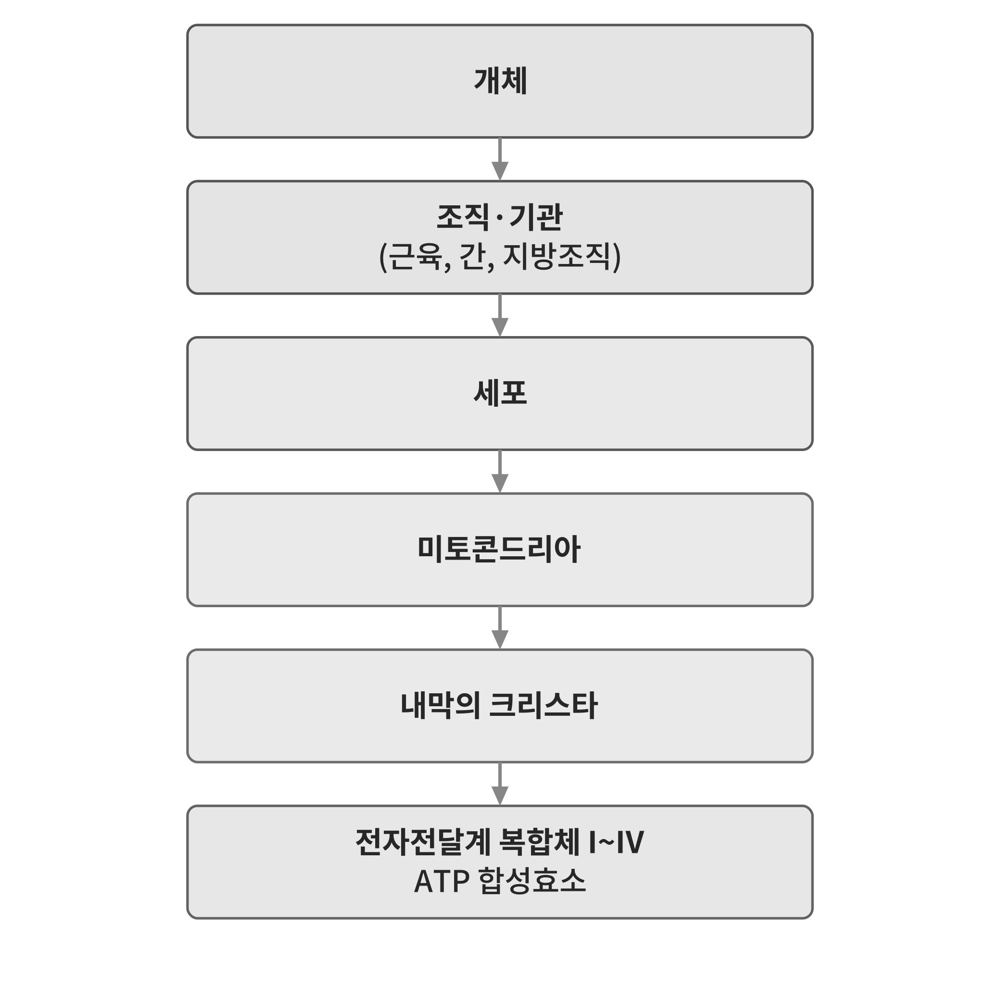
그림 10-1은 이 책의 시선이 어디로 내려가는지를 보여 준다. 1부에서 에너지 법칙, 2부에서 연료별 경로를 배웠고, 3부는 마지막 두 단계, 곧 미토콘드리아와 크리스타 위의 단백질 기계를 다룬다. 한 세포에 들어 있는 미토콘드리아의 수는 세포 종류에 따라 수십 개에서 수천 개까지 차이가 크다. 에너지 수요가 큰 심근, 근육, 간 세포, 갈색지방 세포에 특히 많다.
미토콘드리아는 두 겹의 막으로 둘러싸여 있다. 바깥쪽 막(외막)은 포린(porin)이라 불리는 큰 통로 단백질(VDAC)을 가져 작은 분자를 비교적 자유롭게 통과시킨다. 안쪽 막(내막)은 이온과 대부분의 분자를 통과시키지 않는다. 그래서 내막이 양성자(수소 이온) 구배를 만들고 유지할 수 있다. 내막에는 카디오리핀(cardiolipin)이라는 특이한 인지질이 많고, 안쪽으로 접혀 크리스타를 이룬다. 두 막 사이는 막간 공간이고, 내막으로 둘러싸인 안쪽이 기질(matrix)이다.
그림 10-2. 미토콘드리아의 구조. 바깥은 외막, 그 안쪽 틈이 막간 공간이다. 내막은 안쪽으로 접혀 크리스타를 만들고, 내막 안쪽의 기질에는 TCA 회로와 β산화 효소, 미토콘드리아 DNA(mtDNA)가 있다. 개념도이다.
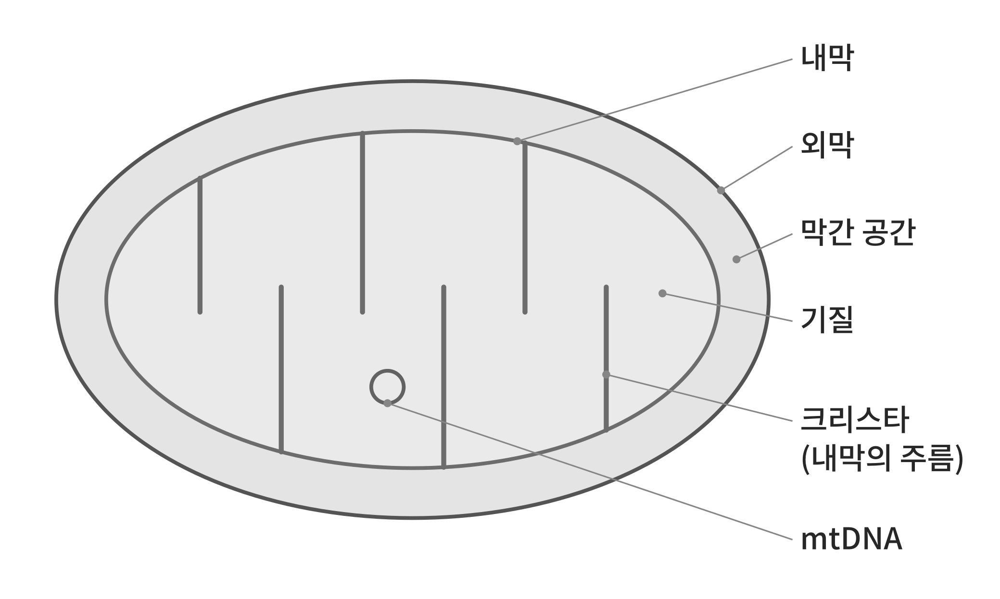
그림 10-2에서 구획을 기억하는 방법은 “무엇이 어디서 일하는가”이다. 기질에는 TCA 회로(6장), β산화(7장), 요소회로의 일부(9장)가 있고, 내막에는 전자전달계(11장)와 ATP 합성효소가 있으며, 막간 공간은 양성자가 쌓이는 곳이다. 이 구획 짓기가 화학삼투의 전제 조건이다.
표 10-1. 미토콘드리아의 구획과 주요 기능.
| 구획 | 주요 구성 | 주요 기능 |
|---|---|---|
| 외막 | VDAC(포린), 지방산 활성화 효소(ACSL) | 작은 분자 통과, 지방산 활성화 |
| 막간 공간 | 시토크롬 c, 양성자 | 양성자 저장, 세포 사멸 신호 |
| 내막 | 전자전달계 복합체 I~IV, ATP 합성효소, 운반체(ANT 등), 카디오리핀 | 양성자 구배 형성, ATP 합성 |
| 기질 | TCA 회로, β산화, 피루브산 탈수소효소, mtDNA, 리보솜 | 연료 산화, 자체 단백질 합성 |
미토콘드리아는 세포핵과 별도의 유전체를 가진다. 사람의 미토콘드리아 DNA(mtDNA)는 약 16,569 염기쌍의 원형 DNA이고 37개의 유전자를 가진다. 이 가운데 13개가 전자전달계와 ATP 합성효소의 단백질 소단위이며, 나머지는 이를 번역하는 데 필요한 리보솜 RNA 2개와 운반 RNA 22개이다. 미토콘드리아 단백질의 대부분(1천 개 이상)은 핵 유전자가 만들어 안으로 수입한다. mtDNA는 어머니로부터만 전해지고, 한 세포 안에 정상 mtDNA와 변이 mtDNA가 섞여 있는 상태(이형질성)가 흔하다.
이런 구조는 린 마굴리스(Lynn Margulis)가 1967년 정리한 세포 내 공생설과 맞는다. 산소를 쓰는 세균이 원시 진핵세포 안에 들어가 살게 되었고, 세월이 지나며 유전자의 많은 부분을 핵으로 넘기고 세포소기관이 되었다는 설명이다. 이중막, 원형 DNA, 자체 리보솜이 그 흔적으로 꼽힌다.
미토콘드리아는 고정된 구조물이 아니라 끊임없이 합쳐지고 쪼개지고 이동하는 관계망이다. 융합은 외막의 미토푸신(MFN1, MFN2)과 내막의 OPA1이, 분열은 세포질의 DRP1이 FIS1·MFF 등 수용체를 통해 미토콘드리아를 조여 자르는 방식으로 일어난다. 융합은 손상된 단백질과 mtDNA를 이웃과 섞어 희석하고, 분열은 손상된 조각을 떼어 내 제거하게 한다. 손상된 조각은 PINK1과 Parkin이 표지하여 세포의 청소 장치(자가포식, 이 경우 미토파지)로 처리된다.
새 미토콘드리아의 생성(미토콘드리아 생합성)은 PGC-1α라는 전사 보조 인자가 지휘한다. 운동이나 추위는 PGC-1α를 늘려 근육과 갈색지방의 미토콘드리아 수를 늘린다. 이 신호는 14장과 12장에서 다시 만난다.
표 10-2. 미토콘드리아 역학의 주요 단백질.
| 과정 | 주요 단백질 | 위치 | 기능 |
|---|---|---|---|
| 융합 | MFN1, MFN2 | 외막 | 외막 융합 |
| 융합 | OPA1 | 내막 | 내막 융합, 크리스타 유지 |
| 분열 | DRP1, FIS1, MFF | 세포질에서 외막으로 | 미토콘드리아 절단 |
| 제거 | PINK1, Parkin | 손상 조각 | 미토파지 표지 |
| 생합성 | PGC-1α | 핵 | 미토콘드리아 유전자 발현 증가 |
표 10-2를 읽을 때 비만과의 연결을 하나 짚어 둔다. 인슐린 저항이 있는 사람의 골격근에서 미토콘드리아 유전자의 발현과 ATP 합성 속도가 낮다는 보고가 2000년대 초에 나왔다. 그러나 이것이 인슐린 저항의 원인인지 결과인지는 논쟁이 계속된다. 21장과 36장에서 이를 다시 정리한다.
Kennedy, E. P., & Lehninger, A. L. (1949). Oxidation of fatty acids and tricarboxylic acid cycle intermediates by isolated rat liver mitochondria. Journal of Biological Chemistry, 179(2), 957–972.
Margulis, L. (Sagan, L.). (1967). On the origin of mitosing cells. Journal of Theoretical Biology, 14(3), 225–274. https://doi.org/10.1016/0022-5193(67)90079-3
Nelson, D. L., & Cox, M. M. (2021). Lehninger principles of biochemistry (8th ed.). W. H. Freeman.
Palade, G. E. (1953). An electron microscope study of the mitochondrial structure. Journal of Histochemistry and Cytochemistry, 1(4), 188–211.
이 장의 출발점 1961년 영국 에든버러 근교의 외딴 연구소에서 피터 미첼(Peter Mitchell)은 학계가 받아들이기 어려운 가설을 《네이처》에 실었다. ATP는 효소 사이의 화학 중간체가 아니라, 막 양쪽의 양성자 농도 차이가 만든 힘으로 합성된다는 것이다. 그때까지 20년 가까이 찾아도 나오지 않던 “고에너지 중간체”가 없다는 주장이었다. 반론은 거셌지만, 1974년 에프라임 래커(Efraim Racker)와 발터 슈토케니우스(Walther Stoeckenius)가 빛으로 양성자를 퍼 올리는 세균 단백질과 ATP 합성효소를 인공 막 주머니에 함께 넣어 ATP가 만들어지는 것을 보인 뒤 가설은 자리를 잡았다. 미첼은 1978년 노벨 화학상을 받았다.
미토콘드리아 내막에는 네 개의 큰 단백질 복합체와 두 개의 이동 운반체가 전자를 NADH와 FADH2에서 산소까지 나른다. 복합체 I(NADH-유비퀴논 산화환원효소)은 NADH의 전자를 받아 유비퀴논(Q, 코엔자임 Q10)에 넘기고, 복합체 II(숙신산 탈수소효소, TCA 회로의 효소와 같은 것)는 FADH2의 전자를 Q에 넘긴다. 복합체 III(시토크롬 bc1)은 Q의 전자를 시토크롬 c에 넘기고, 복합체 IV(시토크롬 c 산화효소)는 시토크롬 c의 전자를 산소에 넘겨 물을 만든다.
그림 11-1. 전자전달계. 복합체 I, III, IV는 전자가 지나갈 때마다 양성자를 기질에서 막간 공간으로 퍼 올린다. 복합체 II는 양성자를 퍼 올리지 않고 전자만 Q에 보탠다. 퍼 올려진 양성자는 ATP 합성효소를 통해 기질로 되돌아오며 ATP를 만든다. 전자 한 쌍당 양성자 수는 교과서 값이다.
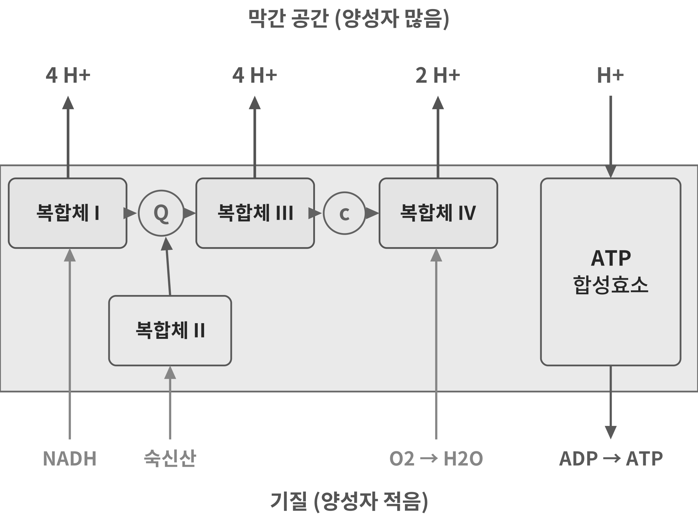
그림 11-1에서 눈에 띄는 비대칭은 복합체 II이다. FADH2에서 시작한 전자는 복합체 I을 건너뛰고 Q에 합류하므로, NADH보다 양성자를 덜 퍼 올린다. 3장 그림 3-1의 전위차와 연결하면, 전자의 낙차가 클수록 한 번에 퍼 올릴 수 있는 양성자가 많아진다.
표 11-1. 전자전달계 복합체 요약. 전자 한 쌍당 양성자 수는 교과서 값이다.
| 복합체 | 이름 | 전자 공급 | 퍼 올리는 양성자 | 대표 억제제 |
|---|---|---|---|---|
| I | NADH-유비퀴논 산화환원효소 | NADH | 4 | 로테논(rotenone) |
| II | 숙신산 탈수소효소 | FADH2 | 0 | 말론산 등 |
| III | 시토크롬 bc1 | 유비퀴놀(QH2) | 4 | 안티마이신 A |
| IV | 시토크롬 c 산화효소 | 시토크롬 c | 2 | 시안화물, 일산화탄소 |
| V | ATP 합성효소 | 양성자 구배 | (양성자가 되돌아옴) | 올리고마이신 |
표 11-1의 억제제는 연구 도구이자 독이다. 시안화물과 일산화탄소는 복합체 IV를 막아 세포 호흡을 멈추게 하므로 치명적이다. 올리고마이신은 ATP 합성효소를 막으면 전자전달도 멈춘다는 사실에서, 두 과정이 양성자 구배로 엄격히 이어져 있음을 보여 준다(공역).
퍼 올려진 양성자는 내막 양쪽에 양성자 구배를 만든다. 이 구배에는 두 요소가 있다. 하나는 전기적 차이(막전위, Δψ)로 막간 공간 쪽이 +, 기질 쪽이 −이다. 다른 하나는 농도 차이(ΔpH)로 막간 공간 쪽이 더 산성이다. 둘을 합쳐 양성자 구동력(proton-motive force, Δp)이라 한다. 교과서에서는 약 200 mV로 소개한다. 양성자 1몰이 이 구배를 따라 되돌아올 때 얻는 자유에너지는 3장의 식을 응용해 F × Δp ≈ 96.485 × 0.2 ≈ 19 kJ/mol로 어림할 수 있다.
ATP 합성효소(ATP synthase, 복합체 V)는 막에 박힌 F0와 기질 쪽으로 튀어나온 F1의 두 부분으로 이루어진다. 양성자가 F0의 c-고리를 통과하면 고리가 회전하고, 고리에 붙은 γ 축이 F1 안에서 같이 돈다. F1의 β소단위 세 개는 γ 축의 위치에 따라 느슨, 긴밀, 개방의 세 상태를 차례로 오간다. 폴 보이어(Paul Boyer)가 1970~80년대에 제안한 이 결합 변화 기전(binding change mechanism)은 존 워커(John Walker)가 1994년 F1의 구조를 밝혀 눈에 보이는 증거를 얻었다. 두 사람은 1997년 노벨 화학상을 공동 수상했다.
그림 11-2. ATP 합성효소의 작동 원리. 막간 공간의 양성자가 F0의 c-고리를 지나며 고리를 돌리면 γ 축이 F1 안에서 회전하고, F1의 β소단위 세 개가 느슨(ADP와 인산 결합), 긴밀(ATP 합성), 개방(ATP 방출)의 세 상태를 차례로 거치며 ATP를 만든다. 개념도이다.
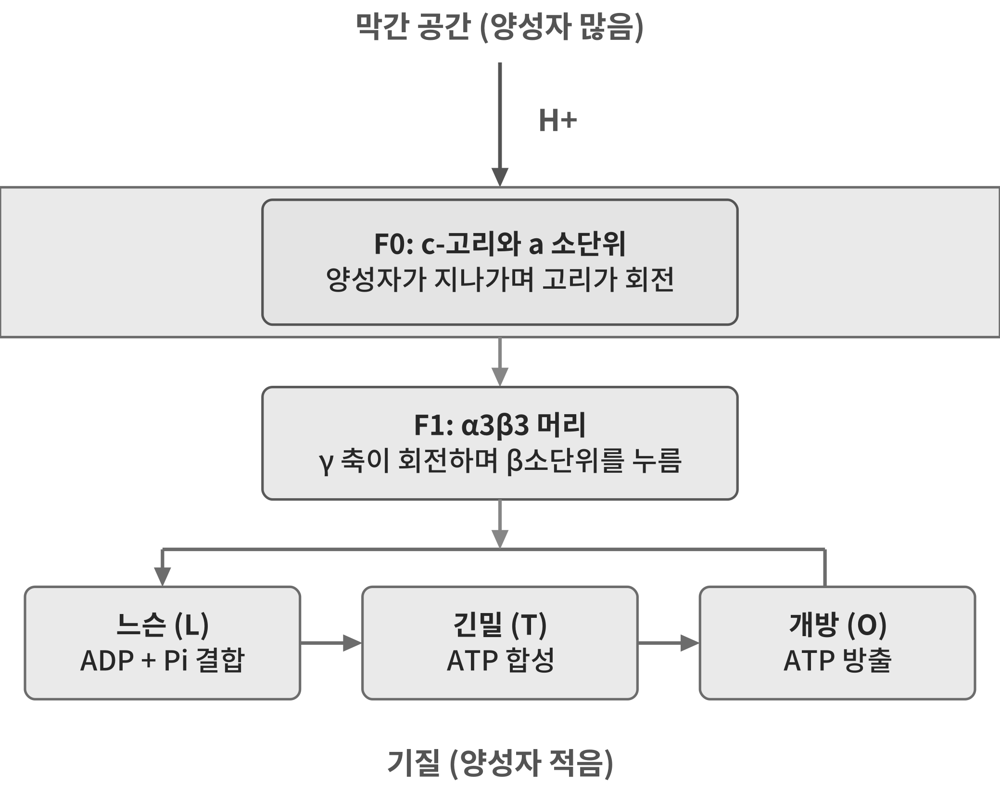
그림 11-2를 한 줄로 읽으면 “양성자의 흐름이 회전으로, 회전이 구조 변화로, 구조 변화가 ATP로” 바뀐다. 한 바퀴(360도)를 돌 때마다 ATP 3분자가 만들어진다. 사람의 c-고리는 c 소단위가 8개로 이루어져 있다고 알려져 있어, ATP 1분자를 만드는 데 양성자 약 2.7개가 쓰이고, 인산과 ADP를 기질로 들여오는 데 양성자 1개가 더 쓰인다. 합쳐 ATP 1분자당 대략 4개의 양성자로 어림한다.
NADH 한 분자가 복합체 I, III, IV를 거치면 양성자 4 + 4 + 2 = 10개가 퍼 올려진다. ATP 1분자당 양성자 약 4개가 필요하므로 NADH 하나는 ATP 약 2.5분자를 만든다. 복합체 II를 거치는 FADH2는 4 + 2 = 6개의 양성자를 퍼 올려 약 1.5분자의 ATP를 만든다. 이 값이 7장에서 쓴 2.5와 1.5이다. 전자를 산소 원자 하나에 보낼 때(NADH 하나당) 만들어지는 ATP 수를 P/O 비라 한다.
표 11-2. 전자 운반체 하나당 ATP 산출 어림(양성자 4개당 ATP 1분자 가정).
| 전자 운반체 | 거치는 복합체 | 퍼 올려진 양성자 | ATP 산출 |
|---|---|---|---|
| NADH | I, III, IV | 10 | 약 2.5 |
| FADH2 | II, III, IV | 6 | 약 1.5 |
표 11-2의 값은 고정된 상수가 아니라 추정치이다. 양성자가 ATP 합성 외의 경로로 새거나(12장의 양성자 누출), 막전위가 다른 일에 쓰이면 실제 산출은 달라진다. 이 때문에 “포도당 한 분자에서 ATP 30~32분자”라는 최근 값이 과거의 36~38보다 낮아졌다. 이 수치를 12장 탈공역과 31~34장의 조직별 대사에서 다시 쓴다.
Abrahams, J. P., Leslie, A. G., Lutter, R., & Walker, J. E. (1994). Structure at 2.8 Å resolution of F1-ATPase from bovine heart mitochondria. Nature, 370(6491), 621–628. https://doi.org/10.1038/370621a0
Mitchell, P. (1961). Coupling of phosphorylation to electron and hydrogen transfer by a chemi-osmotic type of mechanism. Nature, 191(4784), 144–148. https://doi.org/10.1038/191144a0
Nelson, D. L., & Cox, M. M. (2021). Lehninger principles of biochemistry (8th ed.). W. H. Freeman.
Racker, E., & Stoeckenius, W. (1974). Reconstitution of purple membrane vesicles catalyzing light-driven proton uptake and adenosine triphosphate formation. Journal of Biological Chemistry, 249(2), 662–663.
이 장의 출발점 1950년대 말, 갈색지방은 동면하는 동물의 “동면샘”이라 불리며 정체를 알 수 없는 조직이었다. 이 조직의 미토콘드리아가 산소를 맹렬히 쓰면서도 ATP는 거의 만들지 않고 열만 낸다는 사실이 밝혀진 것은 1970년대이다. 데이비드 니콜스(David Nicholls)와 그 동료들은 갈색지방 미토콘드리아의 내막이 양성자를 새게 하는 통로를 가지고 있고, 퓨린 뉴클레오티드(ATP, GDP 등)가 이 통로를 막는다는 것을 보였다. 이후 이 통로 단백질이 분리되어 탈공역 단백질 1(uncoupling protein 1, UCP1)이라는 이름을 얻었다. 오랫동안 성인에게는 갈색지방이 없다고 여겨졌으나, 2009년 양전자 단층촬영 연구들이 성인의 목과 쇄골 주변에서 활성 있는 갈색지방을 확인했다. 이후 열발생은 비만 치료의 표적으로 주목받고 있다.
11장에서 전자전달과 ATP 합성은 양성자 구배로 이어져 있다고 했다. 이를 공역(coupling)이라 한다. 탈공역(uncoupling)은 양성자가 ATP 합성효소를 거치지 않고 내막을 되돌아 건너는 현상으로, 구배에 저장된 에너지가 ATP 대신 열로 흩어진다. 탈공역 상태에서는 구배가 낮아지므로 전자전달이 빨라져 산소 소비가 늘지만 ATP 생산은 늘지 않는다.
그림 12-1. 공역과 탈공역. 전자전달계가 만든 양성자 구배는 두 경로로 소비된다. ATP 합성효소를 거치면 ATP가 만들어지고, UCP1을 거치면 열이 난다. 개념도이다.
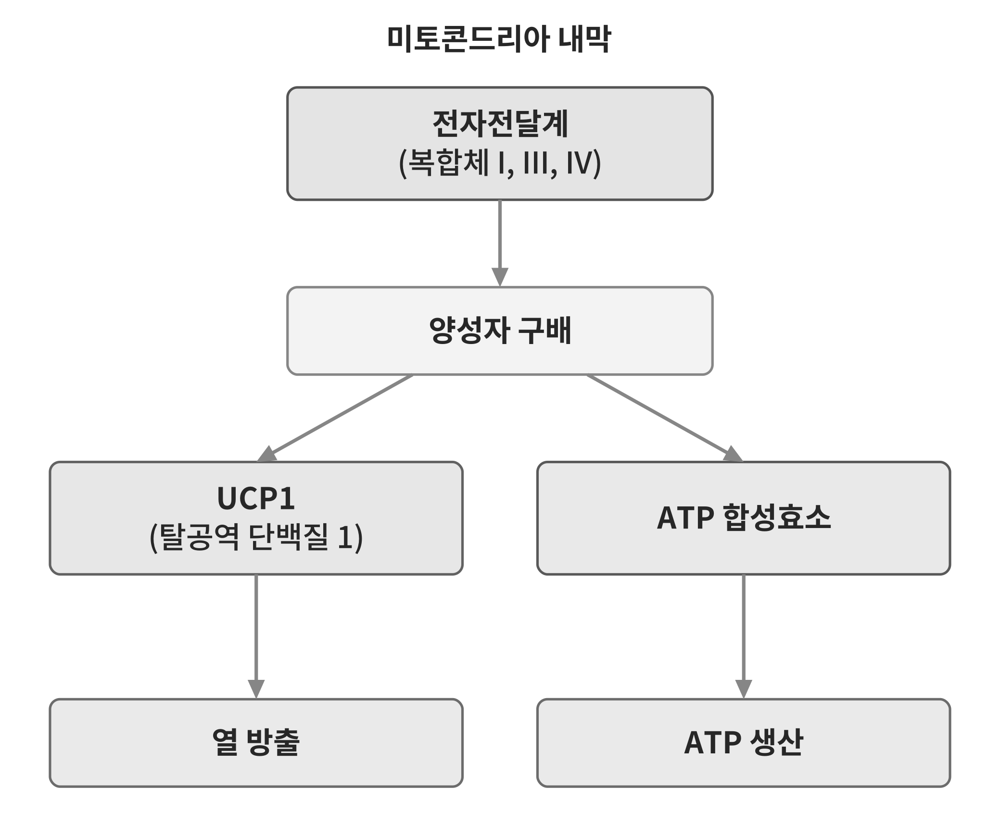
그림 12-1은 같은 구배를 두 소비처가 나누어 쓴다는 점을 보여 준다. 따라서 UCP1이 활성화되면 세포는 같은 양의 연료를 태워도 ATP를 덜 얻고 열을 더 얻는다. 이것이 열발생을 비만과 연결짓는 이유이다.
내막의 양성자 누출은 기초 누출(basal leak)과 유도 누출(inducible leak)로 나뉜다. 기초 누출은 지질 이중층 자체와 아데닌 뉴클레오티드 운반체 등을 통해 항상 일어나는 누출이다. 유도 누출은 UCP1처럼 신호에 의해 조절되는 누출이다. 기초 누출이 정상 조직에서 산소 소비의 상당 부분을 차지한다는 보고가 있으나, 비율은 조직과 조건에 따라 다르므로 수치는 확인이 필요하다(tocheck).
UCP1은 갈색지방세포의 미토콘드리아 내막에 많이 있는 단백질이다. 평상시에는 퓨린 뉴클레오티드가 결합해 활성을 억제한다. 추위에 노출되면 교감신경이 노르에피네프린을 분비하고, 이것이 갈색지방세포의 β3 아드레날린 수용체를 통해 지방분해를 일으킨다. 풀려난 지방산이 UCP1을 활성화하는 동시에 산화 연료가 된다. 지방산이 UCP1의 양성자 수송을 돕는다는 것이 널리 받아들여진 모형이지만 정확한 분자 기전에는 논의가 남아 있다. 이 과정으로 몸은 떨지 않고 열을 내는데, 이를 비떨림 열발생(non-shivering thermogenesis)이라 한다.
표 12-1. 지방조직의 종류와 열발생 특성.
| 종류 | 미토콘드리아 | UCP1 | 주된 기능 |
|---|---|---|---|
| 백색지방 | 적음 | 거의 없음 | 에너지 저장 |
| 갈색지방 | 많음 | 많음 | 열발생 |
| 베이지색지방 | 자극 시 늘어남 | 유도됨 | 저장과 열발생 사이 |
표 12-1에서 베이지색지방(beige adipose tissue, 갈색 유사지방)은 백색지방 속에 있다가 추위나 β아드레날린 자극을 받으면 UCP1을 발현하는 세포를 가리킨다. 이 현상을 백색지방의 갈색화(browning)라 부른다. 성인 사람의 열발생 지방이 전형적 갈색지방인지 베이지색인지에 대해서는 연구마다 결론이 다르다.
UCP1 없이도 열을 내는 경로가 보고되어 있다. 크레아틴을 이용한 기질 순환(creatine substrate cycling)과 근소포체의 칼슘 순환(SERCA의 칼슘 펌프와 사르콜리핀)이 그 예이다. 이들은 ATP를 쓰고 되돌리는 순환으로 열을 내므로, 열발생의 개념은 UCP1 하나로 닫히지 않는다.
표 12-2. 열발생 경로의 비교.
| 경로 | 조직 | 열이 나는 방식 |
|---|---|---|
| UCP1 탈공역 | 갈색·베이지색지방 | 양성자 누출 |
| 크레아틴 순환 | 베이지색지방 등 | ATP 소비 순환 |
| 칼슘 순환 | 골격근 등 | ATP 소비 순환 |
| 떨림 | 골격근 | 근수축의 ATP 소비 |
표 12-2의 앞 세 행은 떨림 없이 열을 낸다. 비만 치료의 관점에서는 각 경로의 에너지 소비 기여도와 약물로 조절 가능한지가 핵심이며, 이는 38장에서 다시 다룬다.
화학적 탈공역제 2,4-다이나이트로페놀(DNP)은 1930년대에 체중 감량약으로 쓰였다. 그러나 열이 지나치게 나는 부작용으로 사망 사례가 이어져 퇴출되었다. 이 역사는 두 가지를 알려 준다. 탈공역은 실제로 에너지 소비를 늘리지만, 조직 선택성과 용량 안전역이 없는 전신 탈공역은 위험하다는 것이다. 현대의 시도는 간 미토콘드리아에 선택적으로 작용하는 약물이나 갈색지방 표적 약물처럼 선택성을 높이는 방향이다.
Cannon, B., & Nedergaard, J. (2004). Brown adipose tissue: Function and physiological significance. Physiological Reviews, 84(1), 277–359. https://doi.org/10.1152/physrev.00015.2003
Nicholls, D. G., & Locke, R. M. (1984). Thermogenic mechanisms in brown fat. Physiological Reviews, 64(1), 1–64. https://doi.org/10.1152/physrev.1984.64.1.1
van Marken Lichtenbelt, W. D., Vanhommerig, J. W., Smulders, N. M., Drossaerts, J. M. A. F. L., Kemerink, G. J., Bouvy, N. D., Schrauwen, P., & Teule, G. J. J. (2009). Cold-activated brown adipose tissue in healthy men. New England Journal of Medicine, 360(15), 1500–1508. https://doi.org/10.1056/NEJMoa0808718
이 장의 출발점 1954년 레베카 거슈먼(Rebeca Gerschman)은 산소의 독성과 방사선의 독성이 비슷하다는 점에 주목해, 산소가 생명에 해로운 이유를 산소에서 생기는 자유 라디칼에서 찾자는 가설을 제안했다. 같은 해 호흡 연구자들은 미토콘드리아에서 과산화수소가 만들어진다는 단서를 얻었다. 이 가설은 한동안 주변부 이론이었으나, 1969년 어윈 프리도비치(Irwin Fridovich)와 조 맥코드(Joe McCord)가 슈퍼옥사이드를 제거하는 효소 SOD(superoxide dismutase)를 찾아내면서 달라졌다. 세포에 슈퍼옥사이드를 없애는 전용 효소가 있다는 것은 슈퍼옥사이드가 실제로 만들어지고 있다는 뜻이기 때문이다. 미토콘드리아는 산소를 써서 에너지를 얻는 대가로 활성산소를 피할 수 없는 부산물로 만든다.
활성산소종(reactive oxygen species, ROS)은 산소에서 생겨 다른 분자와 반응성이 높은 물질을 통틀어 부르는 말이다. 대표 세 가지는 슈퍼옥사이드(O2-), 과산화수소(H2O2), 수산화 라디칼(OH)이다. 슈퍼옥사이드는 산소에 전자 하나가 더해진 것으로, 전자전달계에서 새어 나온 전자가 산소와 만나 생긴다. 과산화수소는 슈퍼옥사이드가 SOD에 의해 바뀐 것이며 전하가 없어 막을 비교적 잘 통과하고 신호 물질로도 쓰인다. 수산화 라디칼은 과산화수소가 철 이온(Fe2+)과 반응하는 펜톤 반응(Fenton reaction)에서 생기며 반응성이 매우 커서 생긴 자리에서 곧바로 주변 분자를 공격한다.
그림 13-1. 활성산소의 생성과 제거. 전자전달계에서 새어 나온 전자가 산소와 만나 슈퍼옥사이드가 된다. SOD가 이를 과산화수소로 바꾸고, 카탈레이스와 글루타티온 과산화효소(GPx)가 과산화수소를 물로 바꾼다. 철 이온이 있으면 과산화수소는 수산화 라디칼이 될 수 있다. 개념도이며 전자 균형은 생략했다.
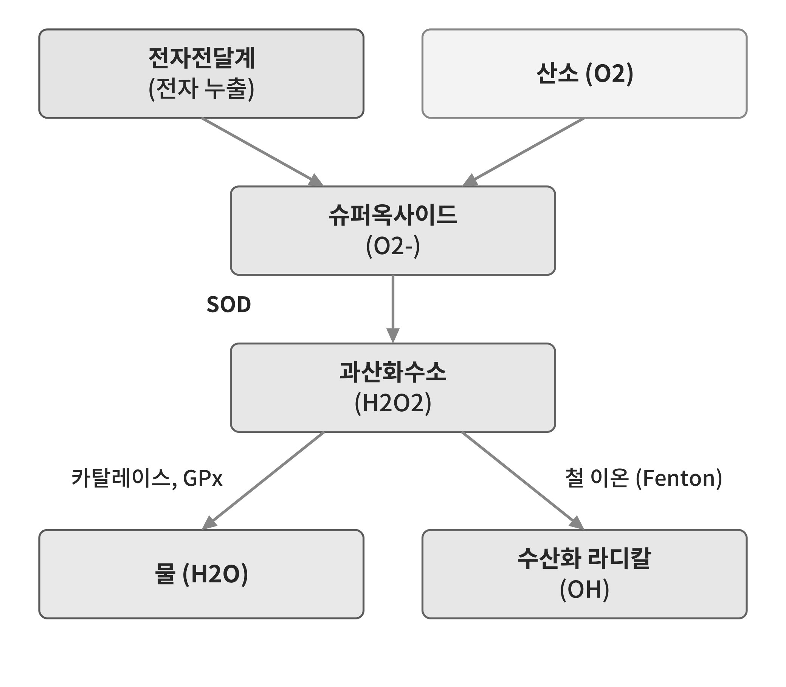
그림 13-1의 흐름에서 중요한 점은 갈림길이다. 과산화수소는 효소에 의해 물로 안전하게 처리될 수도, 철 이온을 만나 가장 위험한 수산화 라디칼이 될 수도 있다. 세포가 철을 단백질에 묶어 두는 것도 이 갈림길을 막으려는 방어이다.
전자전달계에서 ROS가 만들어지는 곳은 여러 지점이며, 대표적으로 복합체 I과 복합체 III가 알려져 있다. 생성량은 전자전달계가 얼마나 환원된 상태인지에 크게 좌우된다. 연료가 넉넉해 NADH와 유비퀴놀이 많이 쌓이고 ATP 수요가 적어 구배가 높게 유지되면 전자가 새기 쉽다. 반대로 12장의 약한 탈공역으로 구배를 낮추면 ROS 생성이 줄어드는 경향이 있다. 이를 “약한 탈공역이 산화 스트레스를 덜어 준다”는 가설(mild uncoupling hypothesis)이라 하며, 비만과 노화 연구에서 자주 인용된다. 정확한 기여도는 조건에 따라 다르므로 수치는 인용하지 않는다.
세포의 방어는 효소계와 소분자계로 나뉜다.
표 13-1. 세포의 항산화 방어계.
| 구분 | 이름 | 작용 | 위치 |
|---|---|---|---|
| 효소 | SOD | 슈퍼옥사이드를 과산화수소로 | 세포질(SOD1), 미토콘드리아 기질(SOD2) |
| 효소 | 카탈레이스 | 과산화수소를 물과 산소로 | 퍼옥시좀 |
| 효소 | 글루타티온 과산화효소(GPx) | 환원 글루타티온을 쓰며 과산화물 제거 | 세포질, 미토콘드리아 |
| 효소 | 퍼옥시레독신(Prx) | 티오레독신을 쓰며 과산화수소 제거 | 세포질, 미토콘드리아 |
| 소분자 | 글루타티온(GSH) | 환원력 공급 | 세포 전반 |
| 소분자 | 비타민 E, 비타민 C | 라디칼 소거 | 막(E), 수용액(C) |
표 13-1에서 효소 방어가 GSH와 티오레독신의 환원력에 기대고 있음을 볼 수 있다. 이 환원력은 3장에서 본 NADPH가 공급한다. 따라서 NADPH를 만드는 오탄당 인산 경로와 같은 NADPH 공급 경로가 막히면 항산화 방어도 약해진다. 방어계 전체가 대사 상태와 묶여 있다는 점이 이 장의 핵심 연결고리이다.
산화 스트레스(oxidative stress)는 ROS 생성이 방어 능력을 넘어 균형이 깨진 상태이다. ROS는 지질(지질 과산화), 단백질(시스테인 산화), DNA(염기 손상)를 손상시킨다. 그러나 ROS가 오직 해로운 물질만은 아니다. 낮은 농도의 과산화수소는 단백질의 특정 시스테인을 가역적으로 산화시켜 신호로 작동한다. 이 때문에 항산화제를 많이 먹으면 무조건 좋다는 생각은 맞지 않는다. 운동이 ROS를 일시적으로 늘리면서도 이후 방어계를 강화한다는 설명이 이런 이중성의 예로 제시되지만, 항산화 보충제가 운동 적응을 약화시킨다는 연구 결과의 크기와 일관성은 논쟁이 있다.
비만 상태에서는 지방조직과 간에서 영양 과잉으로 전자전달계가 환원된 상태가 길어지고 ROS가 늘어난다는 보고가 있다. 늘어난 ROS는 인슐린 신호를 방해해 인슐린 저항성을 악화시키는 방향으로 작용할 수 있다. 다만 산화 스트레스가 인슐린 저항성의 원인인지 결과인지는 아직 정리되지 않았다. 항산화제 임상시험이 대사 지표를 일관되게 개선하지 못한 점도 이 불확실성을 보여 준다. 신약 설계의 관점에서는 ROS를 일괄적으로 줄이는 것보다 원천(전자 누출 지점)이나 방어 경로(NRF2 등)를 선택적으로 조절하는 접근이 논의된다.
표 13-2. ROS 조절 전략의 비교.
| 전략 | 예 | 장점 | 한계 |
|---|---|---|---|
| 원천 감소 | 약한 탈공역, 과영양 완화 | 근본 원인에 접근 | 안전역이 좁을 수 있음 |
| 소거제 보충 | 비타민 E, C | 간단함 | 임상 효과 일관성 부족 |
| 방어 유전자 유도 | NRF2 활성화 | 내인성 방어 강화 | 장기 영향 불확실 |
| 환원력 공급 | NADPH 경로 지원 | 대사와 연결 | 표적 선택성 필요 |
표 13-2에서 보듯 정답은 하나가 아니며, 전략마다 위험이 다르다. 4부에서 다룰 AMPK와 시르투인 같은 에너지 센서가 방어 유전자와 연결되는 점을 다음 장에서 이어서 본다.
Gerschman, R., Gilbert, D. L., Nye, S. W., Dwyer, P., & Fenn, W. O. (1954). Oxygen poisoning and x-irradiation: A mechanism in common. Science, 119(3097), 623–626. https://doi.org/10.1126/science.119.3097.623
McCord, J. M., & Fridovich, I. (1969). Superoxide dismutase: An enzymic function for erythrocuprein (hemocuprein). Journal of Biological Chemistry, 244(22), 6049–6055.
Sies, H., Berndt, C., & Jones, D. P. (2017). Oxidative stress. Annual Review of Biochemistry, 86, 715–748. https://doi.org/10.1146/annurev-biochem-061516-045037
Murphy, M. P. (2009). How mitochondria produce reactive oxygen species. Biochemical Journal, 417(1), 1–13. https://doi.org/10.1042/BJ20081386
이 장의 출발점 1973년 영국과 미국의 연구자들은 서로 독립적으로 간에서 콜레스테롤 합성과 지방산 합성의 핵심 효소를 꺼 버리는 단백질 인산화효소를 발견했다. 한쪽은 HMG-CoA 환원효소를, 다른 쪽은 아세틸-CoA 카르복실화효소를 끄는 효소를 추적하고 있었다. 오랫동안 서로 다른 효소로 여겨졌으나, 1980년대 후반에 데이비드 하디(D. Grahame Hardie) 연구진이 이 둘이 같은 효소임을 밝혔고, AMP로 활성화된다는 점에서 AMP 활성화 단백질 인산화효소(AMP-activated protein kinase, AMPK)라는 이름이 붙었다. 한편 1960년대 이스터섬(라파누이)의 토양에서 분리된 균이 만든 라파마이신이 곰팡이 증식을 막는다는 사실은, 훗날 이 약물이 막는 표적이 영양 풍부 신호를 읽는 중심 효소(mTOR)로 밝혀지면서 대사 연구의 중심이 되었다. 세포에는 에너지가 모자랄 때 쓰는 센서와 풍부할 때 쓰는 센서가 따로 있다.
2장에서 에너지 전하와 아데닐산 키나아제 반응(2 ADP ⇌ ATP + AMP)을 다루었다. 이 반응 덕분에 ATP가 조금만 줄어도 AMP는 비율로 크게 늘어난다. AMPK는 이 변화를 읽는다. AMPK는 α(촉매), β, γ(AMP·ADP·ATP 결합) 세 소단위로 이루어진 복합체이며, γ소단위에 AMP나 ADP가 결합하고, 상위 인산화효소 LKB1이 α소단위의 트레오닌 172번을 인산화하면 활성이 크게 오른다. 칼슘이 올라갈 때는 CaMKK2도 같은 자리를 인산화한다.
활성화된 AMPK는 에너지를 쓰는 동화 경로를 끄고 에너지를 만드는 이화 경로를 켠다. 대표 표적은 아세틸-CoA 카르복실화효소(ACC)로, 이를 인산화해 억제하면 지방산 합성이 줄고 말로닐-CoA가 감소해 7장에서 본 CPT1의 억제가 풀려 지방산 산화가 늘어난다. 또 포도당 수송체 GLUT4를 세포막으로 옮겨 근육의 포도당 흡수를 늘리고, 자가포식을 시작하는 ULK1을 인산화하며, 미토콘드리아 생합성의 마스터 조절자 PGC-1α의 활성을 높인다.
mTOR(mechanistic target of rapamycin)는 인산화효소이며, 두 복합체 mTORC1과 mTORC2를 이룬다. mTORC1은 아미노산(특히 류신), 인슐린과 성장인자 신호, 충분한 에너지가 있을 때 켜져 단백질 합성, 지질 합성, 핵산 합성을 촉진하고 자가포식을 억제한다. 아미노산은 리소좀 표면의 Rag GTPase를 통해 mTORC1을 리소좀으로 모으고, 인슐린 신호는 AKT와 TSC 복합체를 거쳐 mTORC1을 활성화한다. 라파마이신은 mTORC1을 선택적으로 억제한다.
그림 14-1. AMPK와 mTORC1의 대칭 구조. 에너지가 부족하면(AMP/ATP 비 상승) AMPK가 켜져 이화 경로(지방산 산화, 자가포식)를 촉진한다. 영양이 풍부하면(아미노산, 인슐린) mTORC1이 켜져 동화 경로(단백질·지질 합성)를 촉진한다. AMPK는 mTORC1을 억제해 에너지가 부족할 때 합성을 줄인다. 개념도이다.
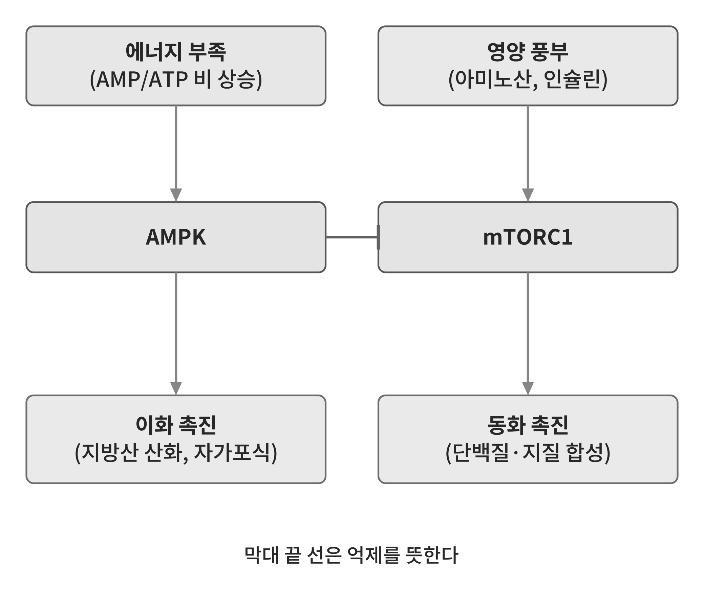
그림 14-1은 한 세포 안에 “아껴 쓰라”와 “만들어 쌓아라”를 말하는 두 신호가 서로를 견제하며 공존한다는 뜻이다. 비만은 영양이 풍부한 상태가 만성적으로 이어져 mTORC1 쪽이 계속 켜지는 상태로 볼 수 있다. 한편 mTORC1이 과활성이면 인슐린 신호의 되먹임 억제(S6K1을 통한 IRS1 억제)가 일어난다는 보고가 있어 인슐린 저항성과 이어진다.
시르투인(sirtuin)은 NAD+를 보조인자로 쓰는 탈아세틸화효소이다. 효모의 수명 연구에서 출발한 이름 Sir2의 포유류 상동 단백질이며, 포유류에는 SIRT1~SIRT7이 있다. SIRT1은 핵과 세포질에, SIRT3은 미토콘드리아에 주로 있다. 3장에서 본 NAD+/NADH 비가 높을 때, 곧 공복이나 운동으로 NAD+가 늘어난 때 시르투인이 활성화된다. SIRT1은 PGC-1α를 탈아세틸화해 활성화하고, SIRT3은 미토콘드리아 단백질(지방산 산화 효소 등)을 탈아세틸화해 활성화한다. 즉 시르투인은 “NAD+가 풍부하다 = 에너지원이 연소되고 있다”는 신호를 읽어 산화 능력을 키운다.
AMPK와 시르투인은 서로를 돕는다. AMPK가 NAD+ 합성 경로(NAMPT)를 늘려 SIRT1을 활성화하고, SIRT1은 LKB1을 탈아세틸화해 AMPK를 더 켠다는 양방향 모형이 제안되어 있다.
표 14-1. 세 가지 에너지 센서의 비교.
| 센서 | 감지하는 신호 | 켜지는 조건 | 주된 결과 |
|---|---|---|---|
| AMPK | AMP, ADP (에너지 전하 하락) | 공복, 운동, 저산소 | 이화 촉진, 동화 억제 |
| mTORC1 | 아미노산, 인슐린, 에너지 | 식후, 영양 과잉 | 동화 촉진, 자가포식 억제 |
| 시르투인 | NAD+ | 공복, 운동 | 산화 능력 증가, 미토콘드리아 생합성 |
표 14-1에서 AMPK와 시르투인은 공복 쪽, mTORC1은 식후 쪽에 놓인다. 5부(식후)와 6부(공복)는 이 대립 구도를 조직 수준으로 옮긴 것이다.
AMPK 활성화제로 메트포르민이 널리 알려져 있다. 메트포르민은 복합체 I을 약하게 억제해 AMP를 높이고 AMPK를 활성화한다고 설명되는 경우가 많으나, AMPK 비의존적 효과도 보고되어 있어 기전은 단일하지 않다. 직접 활성화제(A-769662 등)는 연구 도구로 쓰인다. mTOR 억제제 라파마이신과 그 유도체는 이식 면역억제와 일부 암에 임상 사용되지만, 만성 투여 시 고혈당과 이상지질혈증이 생기는 점이 대사 질환 적용의 한계이다. NAD+ 전구체(니코틴아미드 리보사이드 등)는 시르투인 활성을 높일 목적으로 연구되었으나 인체에서 대사 개선 효과는 일관되지 않다. 이상의 내용은 38장에서 신약 설계 관점으로 다시 다룬다.
표 14-2. 센서 표적 약물과 한계.
| 표적 | 대표 약물·후보 | 기대 효과 | 한계 |
|---|---|---|---|
| AMPK 활성화 | 메트포르민 | 포도당 생성 억제, 인슐린 감수성 | 기전이 단일하지 않음 |
| mTORC1 억제 | 라파마이신 | 합성 억제, 자가포식 | 고혈당, 이상지질혈증 |
| NAD+ 증가 | NAD+ 전구체 | 시르투인 활성 | 인체 효과 일관되지 않음 |
표 14-2의 한계는 센서가 한 조직에서만 일하지 않는다는 데서 온다. 같은 AMPK도 근육, 간, 시상하부에서 다른 결과를 내므로 조직 선택성이 설계의 관건이다.
Hardie, D. G. (2007). AMP-activated/SNF1 protein kinases: Conserved guardians of cellular energy. Nature Reviews Molecular Cell Biology, 8(10), 774–785. https://doi.org/10.1038/nrm2249
Herzig, S., & Shaw, R. J. (2018). AMPK: Guardian of metabolism and mitochondrial homeostasis. Nature Reviews Molecular Cell Biology, 19(2), 121–135. https://doi.org/10.1038/nrm.2017.95
Saxton, R. A., & Sabatini, D. M. (2017). mTOR signaling in growth, metabolism, and disease. Cell, 168(6), 960–976. https://doi.org/10.1016/j.cell.2017.02.004
Houtkooper, R. H., Pirinen, E., & Auwerx, J. (2012). Sirtuins as regulators of metabolism and healthspan. Nature Reviews Molecular Cell Biology, 13(4), 225–238. https://doi.org/10.1038/nrm3293
이 장의 출발점 1921년 여름 토론토 대학의 프레더릭 밴팅(Frederick Banting)과 학생 연구보조 찰스 베스트(Charles Best)는 개의 췌장에서 뽑은 추출물로 당뇨병에 걸린 개의 혈당을 떨어뜨렸다. 이듬해 1월 열네 살 소년 레너드 톰슨이 처음으로 사람에게 인슐린 주사를 맞았다. 이 추출물이 당뇨병을 치료한다는 소식은 곧 퍼졌고, 밴팅과 존 매클라우드(John Macleod)는 1923년 노벨 생리의학상을 받았다. 이후 한 세기 동안 인슐린은 대사 호르몬의 기준점이 되었다. 인슐린이 “먹었다”는 신호라면, 같은 혈액에는 “굶었다”는 신호를 보내는 호르몬들도 흐르고 있다. 이 장은 그 호르몬들을 한 지도 위에 놓는다.
몸은 혈중 포도당과 영양 상태를 감지해 호르몬 두 묶음을 번갈아 내보낸다. 식후에는 인슐린과 인크레틴이 우세해 영양을 저장하는 쪽으로 대사를 돌리고, 공복이나 스트레스 상황에서는 글루카곤, 코르티솔, 성장호르몬, 카테콜아민이 우세해 저장분을 동원하는 쪽으로 돌린다. 1권 4장의 장 호르몬 지도가 먹이를 먹는 시점의 신호를 다루었다면, 이 장은 그 신호가 전신 대사로 이어지는 단계를 다룬다.
그림 15-1. 식후와 공복 호르몬의 두 묶음. 혈중 포도당과 영양 상태에 따라 식후 호르몬(인슐린, 인크레틴)은 저장을, 공복·스트레스 호르몬(글루카곤, 코르티솔, 성장호르몬, 카테콜아민)은 동원을 이끈다. 개념도이다.
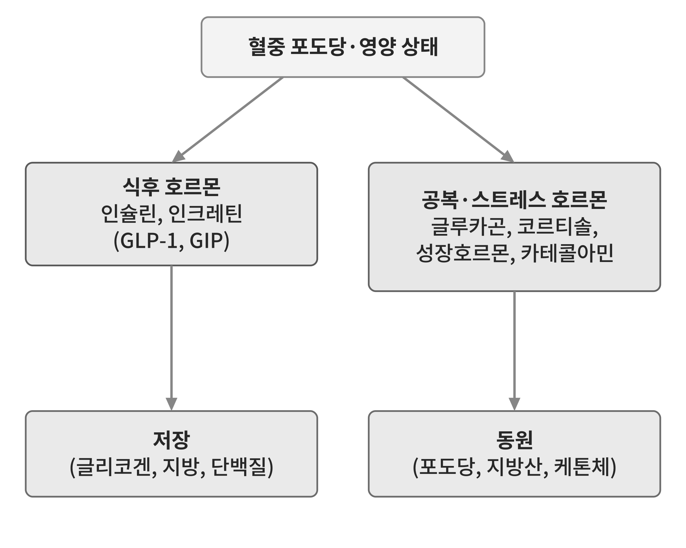
그림 15-1은 호르몬을 기능별로 두 묶음으로 나눈 것이지 서로 완전히 배타적이라는 뜻은 아니다. 예를 들어 성장호르몬은 지방 분해를 촉진하는 동시에 간에서 IGF-1 합성을 늘려 단백질 동화를 돕는다.
인슐린은 췌장 β세포가 분비하는 51개 아미노산의 호르몬이다. 혈중 포도당이 올라가면 β세포 안에서 포도당 대사로 ATP가 늘고, ATP 민감성 칼륨 통로가 닫혀 세포막이 탈분극되며, 전압 의존성 칼슘 통로가 열려 칼슘이 들어와 인슐린 소포가 분비된다. 이 경로는 5장의 해당과 2장의 ATP가 호르몬 분비로 이어지는 예이다.
표적 조직에서 인슐린은 수용체 티로신 인산화효소를 활성화하고 IRS, PI3K, AKT 경로를 거쳐 다음을 일으킨다. 근육과 지방조직에서는 GLUT4를 세포막으로 옮겨 포도당 흡수를 늘리고, 간과 근육에서는 글리코겐 합성효소를 활성화한다. 간에서는 포도당 신생을 억제하고 지방산 합성을 촉진하며, 지방조직에서는 호르몬 민감성 리파아제를 억제해 지방 분해를 막는다. 인슐린 저항성은 이 경로의 신호 전달이 약해져 같은 양의 인슐린으로 효과를 내지 못하는 상태이다.
글루카곤은 췌장 α세포가 분비하는 29개 아미노산의 호르몬으로, 혈당이 낮아질 때 분비된다. 간 세포의 G단백질 연결 수용체에 결합해 cAMP를 올리고 PKA를 활성화한다. 그 결과 글리코겐 분해가 늘고, 포도당 신생이 켜지며, 지방산 산화와 케톤체 생성이 촉진된다. 글루카곤은 인슐린의 반대편 호르몬으로 여겨지지만, 최근에는 글루카곤이 아미노산 대사와 간 지방 대사에도 작용해 에너지 소비를 늘린다는 점이 비만 신약 설계(삼중 작용제)의 근거가 된다.
인크레틴(incretin)은 음식이 장에 닿으면 장 내분비세포가 분비해 식후 인슐린 분비를 늘리는 호르몬이다. 대표는 GLP-1(glucagon-like peptide-1)과 GIP(glucose-dependent insulinotropic polypeptide)이다. 같은 양의 포도당을 정맥으로 주는 것보다 먹을 때 인슐린이 더 많이 나오는 현상을 인크레틴 효과라 한다. GLP-1은 포도당 의존적으로 인슐린 분비를 늘리고 글루카곤 분비를 줄이며, 위 배출을 늦추고, 시상하부에서 식욕을 낮춘다. 혈중에서 DPP-4 효소에 의해 빠르게 분해되므로, 약물로는 분해에 저항하게 개조한 작용제(1권 13~15장)나 DPP-4 억제제가 쓰인다. 인크레틴을 표적으로 한 약물의 식후 효과는 17~19장에서 자세히 다룬다.
코르티솔은 부신 피질이 분비하는 스테로이드 호르몬으로, 시상하부-뇌하수체-부신(HPA) 축의 조절을 받는다. 공복과 스트레스에서 올라 간의 포도당 신생을 촉진하고, 근육 단백질 분해로 아미노산을 공급하며, 지방조직의 지방 분해에 관여한다. 만성적으로 높으면 복부 지방 축적과 인슐린 저항성이 나타나는데, 쿠싱 증후군이 극단적인 예이다. 성장호르몬은 뇌하수체 전엽이 분비하며, 공복과 수면 중에 분비가 늘어 지방 분해를 촉진하고, 간에서 IGF-1을 만들어 성장과 단백질 동화를 이끈다. 카테콜아민(에피네프린, 노르에피네프린)은 부신 수질과 교감신경이 내보내며, β아드레날린 수용체를 통해 간 글리코겐 분해와 지방조직 지방 분해를 일으키고 12장의 갈색지방 열발생도 켠다.
표 15-1. 주요 대사 호르몬의 분비 조건, 수용체, 작용.
| 호르몬 | 분비 기관 | 주된 분비 조건 | 대표 작용 |
|---|---|---|---|
| 인슐린 | 췌장 β세포 | 식후 고혈당 | 포도당 흡수, 글리코겐·지방 합성, 지방 분해 억제 |
| 글루카곤 | 췌장 α세포 | 저혈당, 공복 | 글리코겐 분해, 포도당 신생, 케톤체 생성 |
| GLP-1 | 장 L세포 | 식사 | 인슐린 분비 촉진, 글루카곤 억제, 포만 |
| GIP | 장 K세포 | 식사 | 인슐린 분비 촉진 |
| 코르티솔 | 부신 피질 | 스트레스, 공복 | 포도당 신생, 단백질 분해 |
| 성장호르몬 | 뇌하수체 | 공복, 수면, 운동 | 지방 분해, IGF-1 생성 |
| 카테콜아민 | 부신 수질, 교감신경 | 스트레스, 운동, 추위 | 글리코겐 분해, 지방 분해, 열발생 |
표 15-1을 가로로 읽으면 인슐린만이 저장 쪽이고 나머지가 동원 쪽이라는 비대칭이 보인다. 한 가지 저장 신호가 여러 동원 신호를 상대하는 구조이므로, 인슐린 신호가 약해지면 균형이 쉽게 동원 쪽으로 기운다.
호르몬 신호는 속도로도 구분된다. 카테콜아민은 수 초에서 수 분 안에 작용하고, 인슐린과 글루카곤은 분 단위, 코르티솔과 성장호르몬은 수 시간에 걸친 작용으로 유전자 발현을 바꾼다. 수용체 유형도 다르다. 인슐린 수용체는 티로신 인산화효소이고, 글루카곤, GLP-1, 카테콜아민은 G단백질 연결 수용체이며, 코르티솔은 세포 안 핵수용체이다. 이 차이는 신약 설계에서 표적 유형 선택(펩타이드 작용제인지, 저분자인지)과 직결된다.
표 15-2. 호르몬 수용체의 유형과 약물 설계 함의.
| 수용체 유형 | 예 | 신호 시간 | 약물 설계 함의 |
|---|---|---|---|
| 수용체 티로신 인산화효소 | 인슐린, IGF-1 | 분~시간 | 단백질·펩타이드 제제가 주류 |
| G단백질 연결 수용체 | 글루카곤, GLP-1, 아드레날린 | 초~분 | 펩타이드 및 저분자 모두 가능 |
| 핵수용체 | 코르티솔 | 시간 | 저분자 지용성 약물 |
표 15-2에서 비만 신약의 주 표적이 G단백질 연결 수용체(GLP-1, GIP, 글루카곤 수용체)에 몰려 있는 이유가 드러난다. 펩타이드 작용제로도 저분자로도 접근할 수 있고, 신호가 빠르며 조직 특이성이 높기 때문이다.
Banting, F. G., Best, C. H., Collip, J. B., Campbell, W. R., & Fletcher, A. A. (1922). Pancreatic extracts in the treatment of diabetes mellitus. Canadian Medical Association Journal, 12(3), 141–146.
Drucker, D. J. (2018). Mechanisms of action and therapeutic application of glucagon-like peptide-1. Cell Metabolism, 27(4), 740–756. https://doi.org/10.1016/j.cmet.2018.03.001
Petersen, M. C., & Shulman, G. I. (2018). Mechanisms of insulin action and insulin resistance. Physiological Reviews, 98(4), 2133–2223. https://doi.org/10.1152/physrev.00063.2017
Müller, T. D., Finan, B., Clemmensen, C., DiMarchi, R. D., & Tschöp, M. H. (2017). The new biology and pharmacology of glucagon. Physiological Reviews, 97(2), 721–766. https://doi.org/10.1152/physrev.00025.2016
이 장의 출발점 1963년 영국 케임브리지의 필립 랜들(Philip Randle)과 동료들은 쥐의 심장과 횡격막 근육에 지방산이나 케톤체를 주면 포도당 산화가 줄어든다는 실험 결과를 《랜싯》에 실었다. 그때까지 당뇨병의 인슐린 부족은 포도당 이용 장애로만 설명되었는데, 이 논문은 연료끼리 서로를 밀어내는 경쟁이 몸 안에 있다고 보았다. 연구진은 이 현상을 포도당-지방산 회로(glucose-fatty acid cycle)라 불렀고, 훗날 랜들 회로(Randle cycle)로 널리 알려졌다. 이 회로는 비만과 제2형 당뇨병에서 인슐린 저항성이 왜 생기는지를 설명하는 오랜 가설의 출발점이 되었다. 그러나 이 회로의 방향과 강도는 이후 수십 년 동안 수정을 거듭해 왔다.
랜들 회로의 핵심은 지방산 산화가 늘면 포도당 산화가 줄고, 포도당 이용이 늘면 지방산 산화가 줄어드는 양방향 억제이다. 지방산이 풍부하면 β산화로 아세틸-CoA와 NADH가 늘고, 이는 5장과 6장에서 본 피루브산 탈수소효소(PDH)를 억제한다. 시트르산이 늘면 해당의 조절 효소 PFK1이 억제되고, 이로 인해 포도당-6-인산이 쌓여 헥소키나아제가 억제되는 연쇄가 설명되었다. 반대로 포도당이 풍부하면 간과 근육에서 ACC가 활성화되어 말로닐-CoA가 늘고, 말로닐-CoA는 7장에서 본 CPT1을 억제해 지방산이 미토콘드리아로 들어가는 것을 막는다.
그림 16-1. 포도당과 지방산 산화의 상호 억제. 포도당 산화가 활발하면 말로닐-CoA가 늘어 CPT1을 억제하고, 지방산 산화가 활발하면 아세틸-CoA와 시트르산이 늘어 PDH와 PFK를 억제한다. 선이 교차하는 것은 서로가 상대를 억제하기 때문이다. 개념도이다.
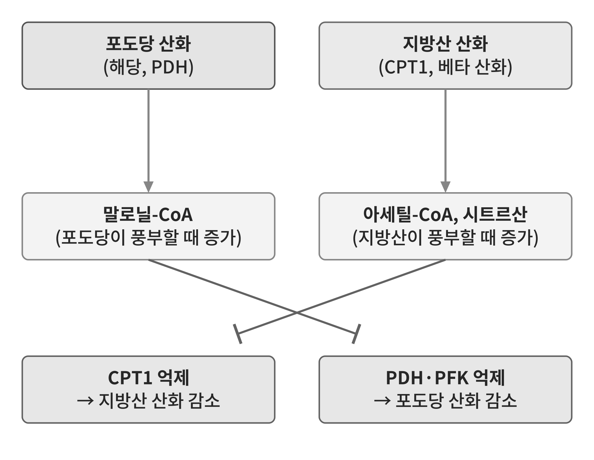
그림 16-1의 두 억제 경로는 서로 다른 조절점이므로, 한쪽이 켜지면 다른 쪽이 꺼지는 스위치처럼 작동한다. 이 스위치 덕분에 건강한 사람의 몸은 식후에는 포도당, 공복에는 지방산을 주연료로 선택한다.
대사 유연성(metabolic flexibility)은 연료의 가용성에 따라 포도당 산화와 지방산 산화 사이를 신속하게 전환하는 능력이다. 공복에서 식후로 넘어갈 때는 지방산 산화에서 포도당 산화로, 식후에서 공복으로 가거나 운동을 시작할 때는 그 반대로 바뀐다. 이 전환은 호흡 교환율(RER, 이산화탄소 배출량을 산소 소비량으로 나눈 값)로 추정한다. 순수하게 탄수화물만 산화하면 RER은 1.0에 가깝고, 순수하게 지방만 산화하면 약 0.7이다. 이는 각 연료의 산화 화학량론에서 나오는 값이다. 건강한 사람은 공복에서 낮은 RER, 인슐린 자극이나 식후에서 높은 RER을 보여 전환 폭이 크다.
표 16-1. 연료 선택과 호흡 교환율.
| 상태 | 주 연료 | RER 방향 | 지배 신호 |
|---|---|---|---|
| 공복 | 지방산(케톤체 포함) | 낮음 (0.7에 가까움) | 낮은 인슐린, 높은 글루카곤 |
| 식후 | 포도당 | 높음 (1.0에 가까움) | 높은 인슐린 |
| 운동(저강도) | 지방산 | 낮음 | 카테콜아민, AMPK |
| 운동(고강도) | 포도당·글리코겐 | 높음 | 카테콜아민 |
표 16-1에서 RER은 연료 비율을 알려 주는 지표이지만, 단백질 산화와 지방 합성이 섞이면 해석이 달라진다는 한계가 있다.
2000년대 초 연구자들은 비만과 제2형 당뇨병 환자에서 이 전환 능력이 떨어진다는 점을 보고했다. 대표적인 연구에서 인슐린 저항성 환자는 공복에서 지방산 산화가 충분히 높아지지 않고, 인슐린 자극에서 포도당 산화로 충분히 전환하지 못했다. 이를 대사 유연성 소실(metabolic inflexibility)이라 한다. 원인으로는 근육의 미토콘드리아 기능 저하, 지방산의 불완전 산화에서 쌓이는 중간 대사물, 지질 축적(디아실글리세롤, 세라마이드)에 의한 인슐린 신호 방해가 제안되었다. 다만 이 연구들은 대부분 소규모 관찰이며, 원인과 결과의 선후 관계는 확정되지 않았다.
표 16-2. 대사 유연성 소실의 가설 비교.
| 가설 | 핵심 주장 | 근거 | 한계 |
|---|---|---|---|
| 랜들 회로 | 지방산이 포도당 산화를 억제 | 초기 동물·조직 실험 | 사람 근육에서 방향 논쟁 |
| 지질 축적 | 디아실글리세롤·세라마이드가 인슐린 신호 방해 | 근육 생검 연구 | 운동선수 역설 |
| 미토콘드리아 기능 저하 | 산화 능력 부족으로 연료 전환 실패 | 일부 영상·생검 연구 | 원인인지 결과인지 불명 |
| 과영양 가설 | 지나친 에너지 공급이 전자전달계를 환원시킴 | 13장 활성산소와 연결 | 직접 검증 어려움 |
표 16-2는 하나의 가설이 모든 현상을 설명하지 못함을 보여 준다. 특히 지구력 운동선수의 근육에는 지질이 많이 쌓여 있어도 인슐린 감수성이 높다는 “운동선수 역설”이 있어, 지질의 양보다 종류와 위치, 미토콘드리아의 처리 능력이 중요하다는 해석이 나왔다.
연료 전환 스위치는 약물이 개입하기 좋은 곳이다. ACC 억제제는 말로닐-CoA를 낮춰 지방산 산화를 늘리려는 시도이고, PDH 키나아제 억제제는 PDH를 풀어 포도당 산화를 키우려는 시도이다. 두 접근 모두 어느 연료를 더 태우게 할지 정하는 일이므로, 대사 유연성을 회복시키는 방향인지, 한쪽 연료로 고정시키는 방향인지에 따라 결과가 달라진다. 비만 약물이 체중 감량 과정에서 연료 선택을 어떻게 바꾸는지는 26장과 27장에서, 약물 표적의 설계 원칙은 38장에서 이어서 다룬다.
Randle, P. J., Garland, P. B., Hales, C. N., & Newsholme, E. A. (1963). The glucose fatty-acid cycle: Its role in insulin sensitivity and the metabolic disturbances of diabetes mellitus. The Lancet, 281(7285), 785–789. https://doi.org/10.1016/S0140-6736(63)91500-9
Kelley, D. E., & Mandarino, L. J. (2000). Fuel selection in human skeletal muscle in insulin resistance: A reexamination. Diabetes, 49(5), 677–683. https://doi.org/10.2337/diabetes.49.5.677
Hue, L., & Taegtmeyer, H. (2009). The Randle cycle revisited: A new head for an old hat. American Journal of Physiology-Endocrinology and Metabolism, 297(3), E578–E591. https://doi.org/10.1152/ajpendo.00093.2009
Goodpaster, B. H., & Sparks, L. M. (2017). Metabolic flexibility in health and disease. Cell Metabolism, 25(5), 1027–1036. https://doi.org/10.1016/j.cmet.2017.04.015
이 장의 출발점 1822년 6월 미국 미시간 주의 모피 교역소에서 총기 사고로 스물몇 살의 캐나다인 알렉시스 생 마르탱(Alexis St. Martin)이 왼쪽 가슴과 복부에 큰 상처를 입었다. 군의관 윌리엄 보먼트(William Beaumont)가 목숨을 건졌지만, 상처는 위벽과 이어진 채 아물어 위 안을 들여다볼 수 있는 작은 구멍(누공)이 남았다. 보먼트는 이 구멍으로 음식 조각을 넣고 꺼내며 위 안에서 음식이 어떻게 변하는지 수백 차례 관찰했고, 1833년에 그 기록을 책으로 냈다. 사람의 몸속에서 한 끼가 어떻게 처리되는지를 시간 순서로 본 최초의 체계적 관찰이었다. 이 장은 같은 질문을 혈액의 관점에서 다시 묻는다. 한 끼를 먹으면 포도당, 인슐린, 아미노산, 중성지방은 시간에 따라 어떤 순서로 오르고 내리는가.
한 끼를 먹은 뒤 몸은 대체로 네 단계를 거친다. 먼저 입과 위에서 음식이 부서지고 섞이는 단계, 다음으로 위 배출을 거쳐 소장에서 영양소가 분해되고 흡수되는 단계, 다음으로 흡수된 영양소가 혈액으로 들어가 조직에 분배되는 단계, 마지막으로 혈중 수준이 다시 공복 수준으로 돌아가는 단계이다. 이 장에서는 세 영양소의 흡수 경로와 혈중 곡선의 순서에 초점을 둔다.
음식이 소장으로 넘어가는 속도는 위 배출(gastric emptying)이 정한다. 위는 음식을 소량씩 십이지장으로 내보내고, 십이지장에 도달한 지방, 산, 삼투압 신호가 위 배출을 늦춘다. 액체는 고체보다 빠르게 빠져나가고, 지방이 많은 식사는 늦게 빠져나간다. 이 지연이 식후 혈중 곡선이 낮고 길게 퍼지도록 만든다. 19장에서 볼 GLP-1이 위 배출을 늦추는 것은 이 생리를 약물로 강화한 것이다.
탄수화물은 입의 침 아밀레이스와 소장의 췌장 아밀레이스, 소장 점막의 이당류 분해효소로 단당류로 분해된다. 포도당과 갈락토스는 나트륨 의존성 수송체(SGLT1)로, 과당은 GLUT5로 장세포에 들어가고, GLUT2를 통해 문맥(간문맥)으로 나간다. 그래서 흡수된 포도당은 먼저 간을 거친다.
단백질은 위의 펩신과 췌장의 단백질 분해효소로 펩타이드와 아미노산이 되고, 장세포에서 흡수되어 대부분 문맥을 통해 간으로 간다. 일부 분지사슬 아미노산(류신, 이소류신, 발린)은 간에서 거의 분해되지 않고 근육 등 말초 조직으로 간다.
지방은 담즙산이 유화하고 췌장 리파아제가 분해해 지방산과 모노아실글리세롤이 되어 장세포로 들어간다. 장세포 안에서 중성지방으로 재합성되어 카일로미크론(chylomicron)이라는 지단백질에 실려 림프관을 거쳐 흉관으로 혈액에 합류한다. 따라서 식이 지방은 간문맥이 아니라 림프를 통해 전신에 먼저 퍼진다.
표 17-1. 영양소별 흡수 경로와 혈중 반응의 특징.
| 영양소 | 장 흡수 형태 | 혈액으로 가는 길 | 식후 혈중 반응의 특징 |
|---|---|---|---|
| 탄수화물 | 단당류 (포도당, 과당, 갈락토스) | 문맥 → 간 | 빠르게 오르고 인슐린이 곡선을 이끔 |
| 단백질 | 아미노산, 짧은 펩타이드 | 문맥 → 간 | 완만히 오르고 인슐린·글루카곤 둘 다 자극 |
| 지방 | 지방산, 모노아실글리세롤 → 카일로미크론 | 림프 → 흉관 → 혈액 | 늦게 오르고 길게 지속 |
표 17-1에서 포도당과 아미노산은 간이 먼저 걸러 내고 지방은 간을 건너뛰어 전신으로 간다는 차이를 읽을 수 있다. 이 차이가 다음 장에서 볼 영양소별 저장 장소의 차이로 이어진다.
그림 17-1. 식후 혈중 수준의 시간 변화(개념도). 한 끼를 먹은 뒤 혈중 포도당과 인슐린이 먼저 오르고, 아미노산이 뒤따르며, 중성지방이 가장 늦게 정점에 이른다. 세로축은 각 곡선의 공복값 대비 상대 수준이며 실제 수치가 아니다. 정점 시각은 식사의 구성과 개인에 따라 달라지므로 순서를 보이기 위한 모식이다.
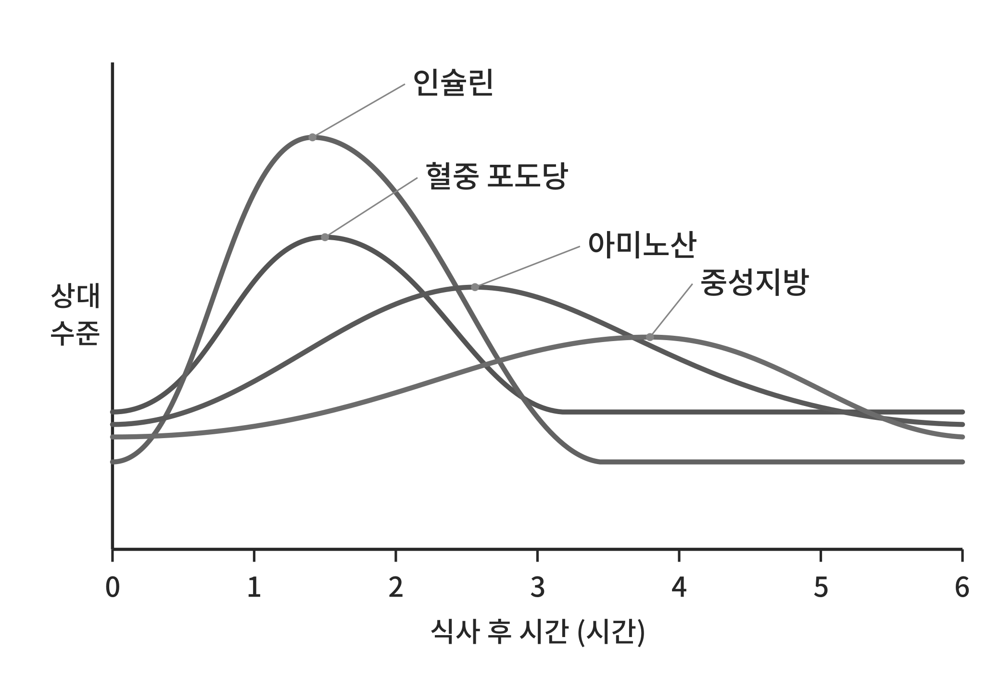
그림 17-1에서 중요한 것은 정점의 높이가 아니라 순서이다. 포도당은 위 배출과 흡수가 빠른 만큼 일찍 오르고, 이를 감지한 인슐린이 곧바로 뒤따라 포도당을 낮춘다. 아미노산은 소화와 흡수에 시간이 더 걸려 늦게 정점에 이르고, 지방은 카일로미크론 형성과 림프 이동 때문에 가장 늦게 오른다. 포도당이 공복 수준으로 돌아온 뒤에도 중성지방은 오랫동안 높게 남을 수 있어, 한 끼의 영향이 혈액에서 끝나는 시각은 영양소마다 다르다.
식사의 구성은 곡선의 모양을 바꾼다. 탄수화물이 많으면 포도당과 인슐린 정점이 높고 빠르다. 같은 탄수화물이라도 식이섬유가 많거나 지방과 단백질이 함께 있으면 위 배출과 흡수가 늦어져 곡선이 낮고 넓어진다. 단백질은 인슐린과 글루카곤을 함께 자극하므로 혈당을 크게 올리지 않으면서 인슐린을 올린다. 지방은 혈당 곡선보다는 중성지방 곡선을 늦게 키운다. 정확한 시간과 크기는 식사의 양, 형태, 개인의 인슐린 반응에 따라 크게 다르므로 이 책은 일반적 방향만 제시한다.
표 17-2. 식사 구성이 식후 곡선에 주는 영향의 방향.
| 식사 요소 | 위 배출 | 혈당 곡선 | 인슐린 곡선 | 중성지방 곡선 |
|---|---|---|---|---|
| 탄수화물 위주 | 비교적 빠름 | 빠르고 높게 | 빠르고 높게 | 영향 작음 |
| 식이섬유 추가 | 늦어짐 | 낮고 넓게 | 낮고 넓게 | 영향 작음 |
| 단백질 추가 | 늦어짐 | 낮아질 수 있음 | 오히려 높아질 수 있음 | 영향 작음 |
| 지방 추가 | 늦어짐 | 낮고 넓게 | 지연될 수 있음 | 늦고 길게 상승 |
표 17-2는 방향을 나타낸 것이며, 여러 요소가 섞이면 효과가 단순히 더해지지 않는다. 비만 약물이 위 배출과 식욕을 바꾸면 이 표의 모든 행이 함께 움직이므로, 약물 임상시험에서 식후 곡선을 해석할 때는 식사 구성을 고정해야 한다는 점이 핵심이다.
식후 곡선은 임상에서 지표로 쓰인다. 식후 혈당과 인슐린 곡선은 인슐린 분비와 감수성을, 식후 중성지방 곡선은 지방 처리 능력(카일로미크론과 VLDL 제거)을 반영한다. 식후 중성지방이 오래 높게 남는 현상은 심혈관 질환 위험과 연관된 것으로 보고되어 있으며, 비만과 인슐린 저항성에서 흔히 관찰된다. 이 지표들을 정량적으로 읽는 방법은 9부의 모델링 장에서 다룬다.
Beaumont, W. (1833). Experiments and observations on the gastric juice, and the physiology of digestion. F. P. Allen.
Hall, J. E., & Hall, M. E. (2021). Guyton and Hall textbook of medical physiology (14th ed.). Elsevier.
Nelson, D. L., & Cox, M. M. (2021). Lehninger principles of biochemistry (8th ed.). W. H. Freeman.
Nordestgaard, B. G. (2017). A test in context: Lipid profile, fasting versus nonfasting. Journal of the American College of Cardiology, 70(13), 1637–1646. https://doi.org/10.1016/j.jacc.2017.08.006
이 장의 출발점 1850년대 파리에서 클로드 베르나르(Claude Bernard)는 개의 간을 씻어 내고도 간 조직에서 포도당이 계속 나온다는 사실에 놀랐다. 혈액을 완전히 씻어 낸 간이 당을 만들고 있다면, 간 자체에 당의 원료가 쌓여 있다는 뜻이었다. 그는 1857년 이 물질을 분리해 글리코겐(glycogène)이라 이름 붙이고, 간이 혈당을 일정하게 유지하는 저장 창고라는 개념, 곧 “내부 환경의 항상성”의 한 축을 제안했다. 이 장은 한 끼로 들어온 영양소가 간, 근육, 지방조직 세 창고에 어떻게 나뉘어 쌓이는지를 따라간다.
식후에 오른 인슐린은 세 조직에 서로 다른 저장 명령을 내린다. 간은 문맥으로 오는 포도당을 먼저 받아 글리코겐으로 저장하고, 남는 것은 지방산으로 바꿔 중성지방으로 포장한다. 근육은 혈액의 포도당을 GLUT4로 받아 글리코겐으로 저장하고 아미노산으로 단백질을 합성한다. 지방조직은 포도당을 받아 글리세롤 뼈대를 만들고, 혈액의 중성지방에서 지방산을 받아 다시 중성지방으로 저장한다.
그림 18-1. 식후 저장의 분업. 식후 영양소와 인슐린 상승이 간, 근육, 지방조직에 서로 다른 저장 명령을 내린다. 간은 글리코겐 합성과 새 지방 합성을 하고 VLDL을 혈액으로 내보낸다. 근육은 GLUT4로 포도당을 받아 글리코겐과 단백질을 만든다. 지방조직은 GLUT4와 지단백질 지방분해효소(LPL)로 영양소를 받아 중성지방으로 저장한다. 개념도이다.
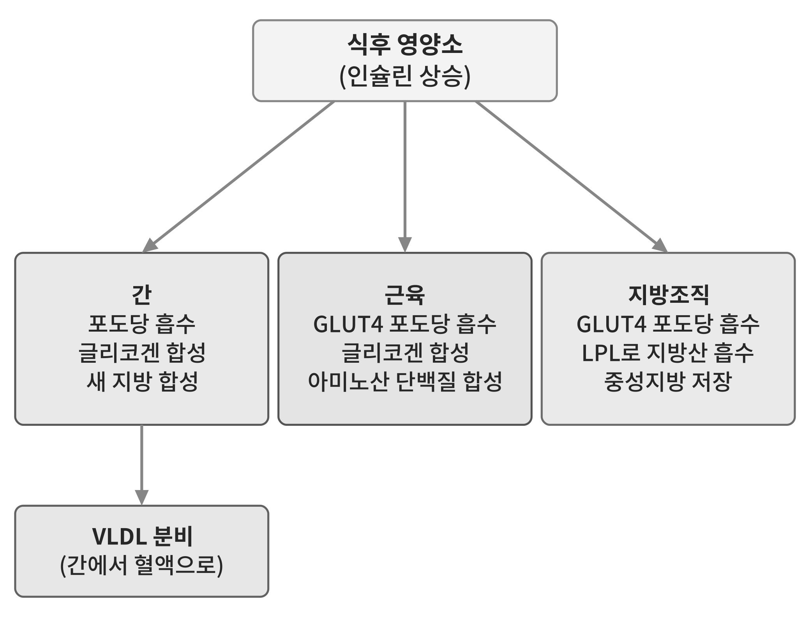
그림 18-1에서 간만 저장고이자 공급자라는 점이 눈에 띈다. 간은 글리코겐과 지방을 모두 저장하지만 VLDL을 통해 혈액으로 지방을 내보내기도 한다. 이 이중 역할이 간의 지방 축적이 곧 전신 대사 이상으로 이어지는 이유이다.
간으로 들어온 포도당은 글루코키나아제(헥소키나아제 IV)가 인산화한다. 이 효소는 높은 포도당 농도에서 작동하고 포도당-6-인산으로 억제되지 않아, 식후의 포도당 유입이 클수록 처리량이 비례해 늘어난다. 인슐린은 글리코겐 합성효소를 활성화하고 글리코겐 포스포릴레이스를 억제해 글리코겐 저장을 늘린다.
간의 글리코겐 저장이 가득 차면 남는 탄수화물은 새 지방 합성(de novo lipogenesis, DNL)으로 간다. 포도당이 해당과 PDH를 거쳐 아세틸-CoA가 되고, 시트르산 수송으로 세포질에 나온 뒤 ACC와 지방산 합성효소(FAS)가 지방산을 만든다. 이 경로는 인슐린이 SREBP-1c를, 포도당이 ChREBP를 켜서 효소 유전자 발현을 높인다. 사람에서 정상 식사 때 DNL의 기여는 비교적 작고, 탄수화물 과잉 섭취나 간 지방증, 인슐린 저항성에서 커진다는 보고가 있다. 합성된 중성지방은 VLDL로 포장되어 혈액으로 나간다.
근육은 식후에 가장 큰 포도당 소비처이다. 인슐린이 수용체를 켜면 PI3K-AKT 경로를 거쳐 GLUT4 소포가 세포막으로 옮겨져 포도당 유입이 급격히 늘고, 유입된 포도당은 글리코겐 합성효소로 저장된다. 근육 글리코겐은 근육 자체의 연료이며 포도당-6-포스파타아제가 없어 혈당으로 내보낼 수 없다. 근육은 또 식후 아미노산 증가와 인슐린, mTORC1 활성화로 단백질 합성을 늘린다. 단백질 합성의 자극은 식후에 높아지고 공복에 분해가 우세해지는 순환을 이룬다.
혈액 속 중성지방은 그 자체로 조직에 들어갈 수 없다. 모세혈관 내피에 붙은 지단백질 지방분해효소(lipoprotein lipase, LPL)가 카일로미크론과 VLDL의 중성지방을 지방산과 글리세롤로 분해하고, 지방산이 지방세포로 들어간다. 지방세포 안에서는 포도당에서 만든 글리세롤-3-인산과 지방산이 결합해 중성지방으로 재합성되어 하나의 큰 지질 방울로 쌓인다. 인슐린은 지방조직의 LPL 활성을 높이는 동시에 호르몬 민감성 리파아제를 억제해 저장은 키우고 분해는 막는다. 이 일을 마친 카일로미크론 잔여물은 간이 받아들인다.
표 18-1. 세 저장 조직의 식후 역할.
| 조직 | 주된 수송체·효소 | 주된 저장 형태 | 인슐린 효과 |
|---|---|---|---|
| 간 | GLUT2, 글루코키나아제, 글리코겐 합성효소, ACC, FAS | 글리코겐, 중성지방(VLDL로 수출) | 글리코겐·지방 합성 촉진, 포도당 신생 억제 |
| 근육 | GLUT4, 글리코겐 합성효소 | 글리코겐, 단백질 | 포도당 흡수·글리코겐 합성 촉진, 단백질 합성 촉진 |
| 지방조직 | GLUT4, LPL | 중성지방 | 포도당·지방산 흡수 촉진, 지방 분해 억제 |
표 18-1은 인슐린이라는 하나의 신호가 세 조직에서 서로 다른 효소 세트를 켠다는 점을 정리한 것이다. 이는 인슐린 저항성이 한 조직에서 시작되어도 증상이 조직마다 다르게 나타나는 이유이기도 하다.
저장 형태에 따라 에너지 효율이 크게 다르다. 글리코겐은 친수성이어서 물과 함께 저장되므로 무게당 에너지가 낮고, 중성지방은 소수성이어서 물 없이 저장되므로 무게당 에너지가 높다. 1장에서 본 에너지 밀도의 차이가 그대로 저장 전략에 반영된다. 그래서 몸은 단기 저장고로 글리코겐을, 장기 저장고로 지방을 쓴다. 글리코겐 용량은 간에 대략 100 g 안팎, 근육에 수백 g으로 알려져 있어 하루 이틀 분량에 그치지만, 지방조직의 용량은 이론상 거의 제한이 없다(tocheck).
표 18-2. 글리코겐과 중성지방의 저장 비교.
| 항목 | 글리코겐 | 중성지방 |
|---|---|---|
| 저장 형태 | 수화된 다당 | 무수 지질 방울 |
| 무게당 에너지 | 낮음 | 높음 |
| 용량 | 제한적 (간·근육) | 사실상 확장 가능 (지방조직) |
| 동원 속도 | 빠름 | 느림 |
| 주된 역할 | 단기 완충 | 장기 저장 |
표 18-2에서 비만이 왜 지방 저장고의 확장 문제인지가 드러난다. 용량이 제한적인 글리코겐 창고가 차면, 남는 에너지는 용량이 확장되는 지방 창고로 흘러간다. 21장에서는 이 창고가 한계에 이를 때 일어나는 일을 다룬다.
Bernard, C. (1857). Sur le mécanisme physiologique de la formation du sucre dans le foie. Comptes Rendus de l’Académie des Sciences, 44, 578–586.
Petersen, M. C., & Shulman, G. I. (2018). Mechanisms of insulin action and insulin resistance. Physiological Reviews, 98(4), 2133–2223. https://doi.org/10.1152/physrev.00063.2017
Wang, H., & Eckel, R. H. (2009). Lipoprotein lipase: From gene to obesity. American Journal of Physiology-Endocrinology and Metabolism, 297(2), E271–E288. https://doi.org/10.1152/ajpendo.90920.2008
Lambert, J. E., Ramos-Roman, M. A., Browning, J. D., & Parks, E. J. (2014). Increased de novo lipogenesis is a distinct characteristic of individuals with nonalcoholic fatty liver disease. Gastroenterology, 146(3), 726–735. https://doi.org/10.1053/j.gastro.2013.11.049
이 장의 출발점 1906년 영국의 생리학자 벤자민 무어(Benjamin Moore)는 장 점막에서 뽑은 추출물이 이자의 분비를 일으킬 것이라 보고, 이를 당뇨병 환자에게 먹였다. 환자의 소변 당이 줄었다는 기록은 있지만 효과는 일정하지 않았다. 1932년 벨기에의 장 라 바르(Jean La Barre)는 장에서 나와 이자 내분비를 조절하는 물질을 인크레틴(incrétine)이라 불렀다. 이 개념이 실제로 확인된 것은 1964년이다. 두 연구진이 같은 양의 포도당을 입으로 먹일 때와 정맥으로 주사할 때 인슐린 반응이 다르다는 것을 독립적으로 보고했다. 포도당 수치는 비슷한데 먹을 때가 인슐린이 훨씬 많이 나왔다. 장이 식사를 알리는 별도의 신호를 이자에 보낸다는 증거였다. 이후 그 신호가 GIP와 GLP-1이라는 두 호르몬임이 밝혀졌다.
포도당이 오르면 이자 β세포는 인슐린을 두 단계로 분비한다. 첫 단계(제1기)는 포도당이 오른 직후 수 분 안에 일어나는 짧고 빠른 분비이며, 세포 안에 미리 모여 있던 소포가 즉시 방출되는 것이다. 다음 단계(제2기)는 그 뒤로 포도당이 높은 동안 이어지는 느리고 지속적인 분비이며, 새로 합성되고 이동한 소포가 방출되는 것이다. 제1기는 식후 초기에 간의 포도당 생성을 빠르게 억제해 혈당의 급등을 막는 역할을 하며, 제2형 당뇨병에서 가장 먼저 사라지는 반응으로 알려져 있다.
그림 19-1. 인크레틴 효과(개념도). 같은 혈당 곡선을 만들도록 포도당을 정맥으로 주면(주황) 인슐린 분비가 작고, 입으로 먹으면(파랑) 더 크다. 두 곡선의 차이가 장에서 오는 인크레틴 신호가 더한 인슐린 분비이다. 세로축은 상대 수준이며 실제 수치가 아니다.
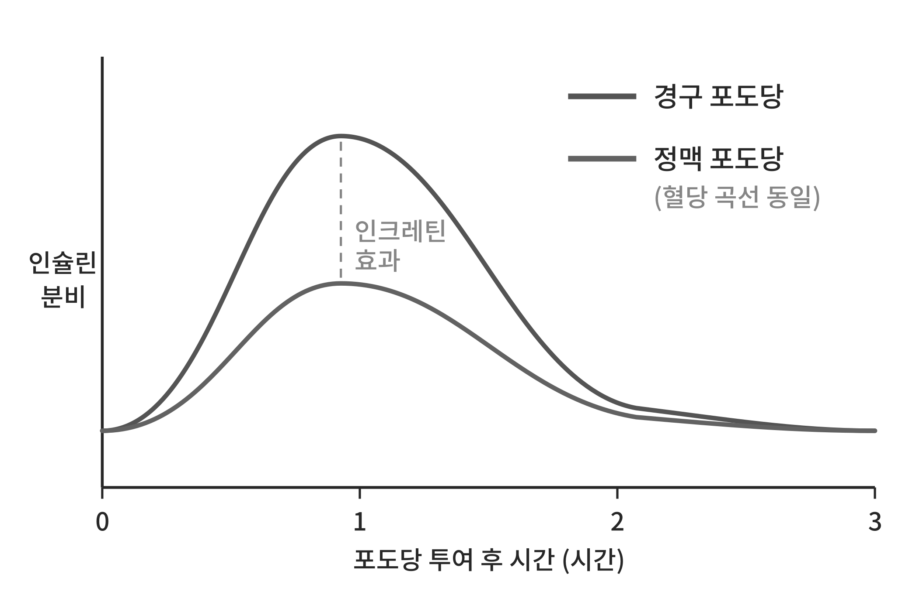
그림 19-1에서 중요한 점은 두 실험의 혈당이 같다는 조건이다. 혈당만으로는 설명되지 않는 추가 인슐린 분비가 장에서 왔다는 뜻이며, 건강한 사람에서 이 몫이 식후 인슐린 반응의 상당 부분(절반 이상이라는 보고가 흔하다)을 차지한다고 알려져 있다. 제2형 당뇨병에서는 이 효과가 줄어 있다.
인크레틴 효과를 만드는 두 호르몬은 소장의 서로 다른 세포에서 나온다. GIP(포도당 의존 인슐린 분비 자극 폴리펩타이드)는 소장 상부(십이지장, 공장)의 K세포가, GLP-1(글루카곤 유사 펩타이드-1)은 소장 하부(회장)와 대장의 L세포가 포도당과 지방산 등 영양소에 반응해 분비한다. 두 호르몬 모두 β세포의 G단백질 연결 수용체에 결합해 cAMP를 올리고, 포도당이 높을 때에 한해 인슐린 분비를 증폭한다. 이 포도당 의존성이 저혈당 위험을 낮추는 핵심이다.
GLP-1은 이 밖에도 알파 세포의 글루카곤 분비를 억제하고, 위 배출을 늦추며, 시상하부에서 식욕을 줄이는 작용을 한다. GIP는 포도당 의존 인슐린 분비를 키우는 점은 같지만 글루카곤에 대한 작용과 식욕·지방조직에서의 역할은 아직 논의가 활발하다. 두 호르몬은 DPP-4 효소에 의해 N-말단 두 아미노산이 떨어져 나가 활성을 잃으므로 혈중 반감기가 매우 짧다(분 단위). 이 때문에 약물은 DPP-4에 분해되지 않도록 개조된 작용제이거나 DPP-4 자체의 억제제이다.
표 19-1. GLP-1과 GIP의 비교.
| 항목 | GLP-1 | GIP |
|---|---|---|
| 분비 세포 | L세포 (소장 하부, 대장) | K세포 (소장 상부) |
| 주요 자극 | 포도당, 지방산, 아미노산 | 포도당, 지방산 |
| 인슐린 분비 | 포도당 의존적 증가 | 포도당 의존적 증가 |
| 글루카곤 | 억제 | 상황에 따라 다르다는 보고 |
| 위 배출 | 지연 | 뚜렷한 영향 없음으로 알려짐 |
| 식욕 | 감소 | 연구 중 |
| 분해 효소 | DPP-4 | DPP-4 |
표 19-1의 마지막 두 열이 같은 이유로 DPP-4가 두 호르몬 모두에 약물 표적이 된다. 1권 13~15장의 이중, 삼중 작용제는 이 차이를 한 분자에 모아 쓰는 설계이다.
식후에는 인슐린만 오르는 것이 아니라 글루카곤이 억제된다. 포도당이 올라 알파 세포의 분비가 줄고, 인슐린과 GLP-1이 이를 거든다. 간은 인슐린은 올라가고 글루카곤은 내려간 환경에서 포도당 생성을 끄고 저장 모드로 간다. 한편 GLP-1이 위 배출을 늦추면 포도당이 장에서 혈액으로 들어가는 속도가 완만해져 인슐린 분비의 부담이 줄어든다. 따라서 GLP-1 작용제의 식후 혈당 효과는 인슐린 증폭, 글루카곤 억제, 위 배출 지연 세 경로의 합이다.
표 19-2. GLP-1 신호의 식후 경로.
| 경로 | 표적 | 결과 | 식후 시기 |
|---|---|---|---|
| 인슐린 분비 증폭 | β세포 | 포도당 의존적 인슐린 증가 | 식후 초기부터 |
| 글루카곤 억제 | α세포 | 간 포도당 생성 감소 | 식후 전반 |
| 위 배출 지연 | 위, 미주신경 | 포도당 유입 속도 완만 | 식후 초~중반 |
| 식욕 억제 | 시상하부 등 | 섭취량 감소 | 식전·식후 |
표 19-2는 하나의 호르몬이 시간대마다 다른 경로로 일한다는 것을 보여 준다. 신약 임상시험에서 식후 혈당 곡선이 낮아지는 이유를 이 경로별로 나눠 해석하는 방법은 9부에서 다룬다.
Drucker, D. J. (2018). Mechanisms of action and therapeutic application of glucagon-like peptide-1. Cell Metabolism, 27(4), 740–756. https://doi.org/10.1016/j.cmet.2018.03.001
Elrick, H., Stimmler, L., Hlad, C. J., Jr., & Arai, Y. (1964). Plasma insulin response to oral and intravenous glucose administration. The Journal of Clinical Endocrinology & Metabolism, 24(10), 1076–1082. https://doi.org/10.1210/jcem-24-10-1076
Nauck, M. A., Homberger, E., Siegel, E. G., Allen, R. C., Eaton, R. P., Ebert, R., & Creutzfeldt, W. (1986). Incretin effects of increasing glucose loads in man calculated from venous insulin and C-peptide responses. The Journal of Clinical Endocrinology & Metabolism, 63(2), 492–498. https://doi.org/10.1210/jcem-63-2-492
Nauck, M. A., & Meier, J. J. (2018). Incretin hormones: Their role in health and disease. Diabetes, Obesity and Metabolism, 20(S1), 5–21. https://doi.org/10.1111/dom.13129
이 장의 출발점 1902년 독일의 막스 루브너(Max Rubner)는 개를 열량계에 넣고, 같은 양의 에너지를 지방, 탄수화물, 단백질로 먹였을 때 몸이 내는 열이 서로 다르다는 것을 관찰했다. 특히 고기를 먹이면 먹은 직후 체열 발생이 눈에 띄게 늘었다. 그는 이를 “특이 동적 작용(specific dynamic action)”이라 이름 붙였다. 먹은 에너지가 모두 몸의 일에 쓰이는 것이 아니라 먹는 행위 자체의 비용이 있다는 뜻이다. 한 세기가 지난 지금 이 현상은 식이유발열(diet-induced thermogenesis)이라 불리며, 비만 연구에서는 식후 열발생이 낮을수록 체중이 늘기 쉬운지를 두고 논쟁이 이어지고 있다.
하루 에너지 소비는 크게 기초대사, 신체 활동, 식이유발열 세 부분으로 나뉜다. 식이유발열은 보통 하루 소비의 작은 부분(대략 10퍼센트 안팎이라는 서술이 일반적이다)을 차지한다. 이 열은 두 요소로 나뉜다. 하나는 영양소를 소화하고 흡수하고 저장 형태로 바꾸는 데 드는 ATP 비용인 의무적 열발생(obligatory thermogenesis)이다. 다른 하나는 식사 후 교감신경과 갈색지방이 켜져서 더해지는 조절성 열발생(facultative thermogenesis)이다.
그림 20-1. 섭취 에너지의 갈림길. 섭취한 에너지는 저장, 식이유발열, 기타 소비(기초대사와 활동)로 나뉜다. 식이유발열에서 나온 열은 체온 유지에 기여한 뒤 방출된다. 개념도이며 각 몫의 비율은 식사와 개인에 따라 다르다.
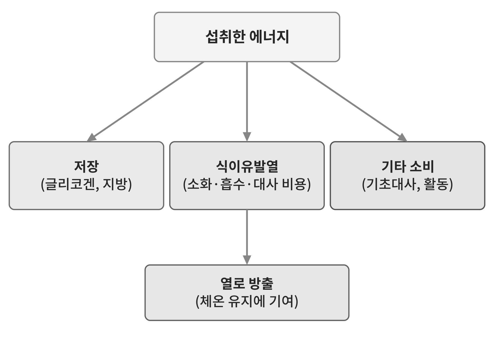
그림 20-1에서 저장 쪽 화살표와 열 쪽 화살표는 같은 섭취 에너지를 나누는 두 경쟁자이다. 식이유발열이 클수록 같은 섭취량에서 저장되는 에너지는 줄어든다.
영양소마다 이 비용이 다르다. 영양소를 저장 또는 이용 형태로 바꾸는 데 드는 ATP 비용이 서로 다르기 때문이다. 단백질은 아미노산을 분해해 요소회로(9장)로 질소를 처리하는 비용이 커서 열발생이 가장 크다. 탄수화물은 포도당을 글리코겐으로 저장하는 비용이 중간이고, 지방은 장세포 흡수와 지방조직 재합성의 비용이 가장 작다. 교과서 값은 섭취 에너지의 단백질 약 20~30퍼센트, 탄수화물 약 5~10퍼센트, 지방 약 0~3퍼센트이다(출처 확인 필요).
표 20-1. 영양소별 식이유발열의 상대 크기.
| 영양소 | 상대 크기 | 주된 비용 요인 |
|---|---|---|
| 단백질 | 가장 큼 | 아미노산 분해, 요소회로, 단백질 합성 |
| 탄수화물 | 중간 | 글리코겐 합성, (과식 시) 새 지방 합성 |
| 지방 | 가장 작음 | 흡수와 중성지방 재합성 |
| 알코올 | 비교적 큼 | 간 대사 |
표 20-1은 같은 열량이라도 식사 구성에 따라 몸에 남는 에너지가 달라질 수 있음을 뜻한다. 이 때문에 단백질이 많은 식사가 체중 조절에 유리하다는 주장이 나오지만, 식이유발열의 차이는 하루 소비의 소수점 단위 비중이라 그 자체만으로 체중 변화를 설명하기에는 한계가 있다는 반론이 있다.
식이유발열에는 신경과 호르몬이 더하는 몫이 있다. 1979년 닐 로스웰(Nancy Rothwell)과 마이클 스톡(Michael Stock)은 쥐에게 기름지고 맛있는 먹이(카페테리아 식이)를 주면 먹은 에너지의 일부가 갈색지방에서 열로 바뀌어 체중 증가가 예상보다 작다는 실험 결과를 내놓았다. 이 관찰은 12장의 갈색지방 열발생이 추위뿐 아니라 먹는 행위에도 켜진다는 아이디어의 출발점이 되었다. 식후 인슐린과 렙틴이 시상하부를 거쳐 교감신경을 켜고, 노르에피네프린이 갈색지방의 β3 수용체를 자극해 UCP1을 켠다는 모형이 제안되어 있다. 다만 성인 사람에서 이 경로가 식후 열발생에 기여하는 정도는 확정되지 않았고, 동물 결과를 그대로 옮기기 어렵다는 의견이 많다.
표 20-2. 의무적 열발생과 조절성 열발생.
| 구분 | 원인 | 조절 | 비만과의 연관 |
|---|---|---|---|
| 의무적 열발생 | 흡수·저장·대사의 ATP 비용 | 영양소 종류와 양에 비례 | 식사 구성으로 조절 가능 |
| 조절성 열발생 | 교감신경, 갈색지방 UCP1 | 신경·호르몬 신호(인슐린, 렙틴 등) | 낮으면 체중 증가 위험이라는 가설 |
표 20-2의 아래 행이 약물 표적으로 매력적인 이유는 이것이 조절 가능하다는 점이다. 그러나 앞서 말했듯 사람에서의 기여도는 작을 수 있어, 표적으로서의 가치는 임상 근거로 검증되어야 한다.
식이유발열은 간접열량측정으로 잰다. 호흡 가스(산소 소비량과 이산화탄소 생성량)를 식전과 식후 수 시간 동안 측정해 식후의 증가분을 합산한다. 측정은 안정 상태에서 해야 하고, 식사의 양과 구성, 측정 시간, 개인의 인슐린 감수성에 따라 값이 달라져 연구 간 비교가 어렵다. 이 한계는 비만 약물이 식후 에너지 소비를 늘리는지 판단할 때 그대로 적용되며, 이 점은 9부 모델링 장에서 다시 다룬다.
Rubner, M. (1902). Die Gesetze des Energieverbrauchs bei der Ernährung. Franz Deuticke.
Rothwell, N. J., & Stock, M. J. (1979). A role for brown adipose tissue in diet-induced thermogenesis. Nature, 281(5726), 31–35. https://doi.org/10.1038/281031a0
Westerterp, K. R. (2004). Diet induced thermogenesis. Nutrition & Metabolism, 1, Article 5. https://doi.org/10.1186/1743-7075-1-5
Tappy, L. (1996). Thermic effect of food and sympathetic nervous system activity in humans. Reproduction Nutrition Development, 36(4), 391–397. https://doi.org/10.1051/rnd:19960405
이 장의 출발점 1936년 영국의 해럴드 힘스워스(Harold Himsworth)는 당뇨병 환자에게 인슐린과 포도당을 함께 주사해 혈당이 얼마나 떨어지는지를 비교했다. 어떤 환자는 소량의 인슐린에도 혈당이 뚝 떨어졌지만, 어떤 환자는 같은 양에서 거의 반응이 없었다. 그는 당뇨병에 인슐린이 부족한 형과 인슐린이 있는데도 듣지 않는 형이 있다고 보고, 후자를 “인슐린 비감수성”이라 불렀다. 훗날 1960년 로절린 얄로(Rosalyn Yalow)와 솔로몬 버슨(Solomon Berson)이 방사면역측정법으로 혈중 인슐린을 직접 재자, 성인 발병 당뇨병 환자의 인슐린이 오히려 정상보다 높은 경우가 많다는 사실이 확인되었다. 인슐린이 충분한데도 몸이 반응하지 못하는 상태, 곧 인슐린 저항성이 식후 대사의 한계를 가장 잘 보여 준다.
18장에서 글리코겐은 단기 창고이고 지방은 장기 창고라고 했다. 글리코겐 창고는 용량이 제한적이라 식사가 반복되면 쉽게 가득 찬다. 그러면 남는 탄수화물은 새 지방 합성을 거쳐 지방으로 가고, 식이 지방도 지방조직으로 간다. 지방조직의 용량은 확장될 수 있지만 무한하지 않다. 피하지방이 충분히 확장하지 못하거나, 확장된 지방세포가 염증과 섬유화로 기능을 잃으면 남는 지방이 간, 근육, 췌장, 심장 같은 지방조직 밖에 쌓이는데 이를 이소성 지방 축적(ectopic fat accumulation)이라 한다. 이 관점을 “지방조직 확장성 가설(adipose tissue expandability hypothesis)”이라 부른다.
그림 21-1. 저장 한계에서 인슐린 저항으로. 만성적 과영양이 피하지방의 저장 한계에 이르면 지방이 간, 근육, 췌장에 이소성으로 쌓이고, 지질 중간 대사물이 인슐린 신호를 약화시켜 식후 고혈당과 고지혈증으로 이어진다는 가설적 경로이다. 개념도이며 각 단계의 기여도는 개인과 조직에 따라 다르다.
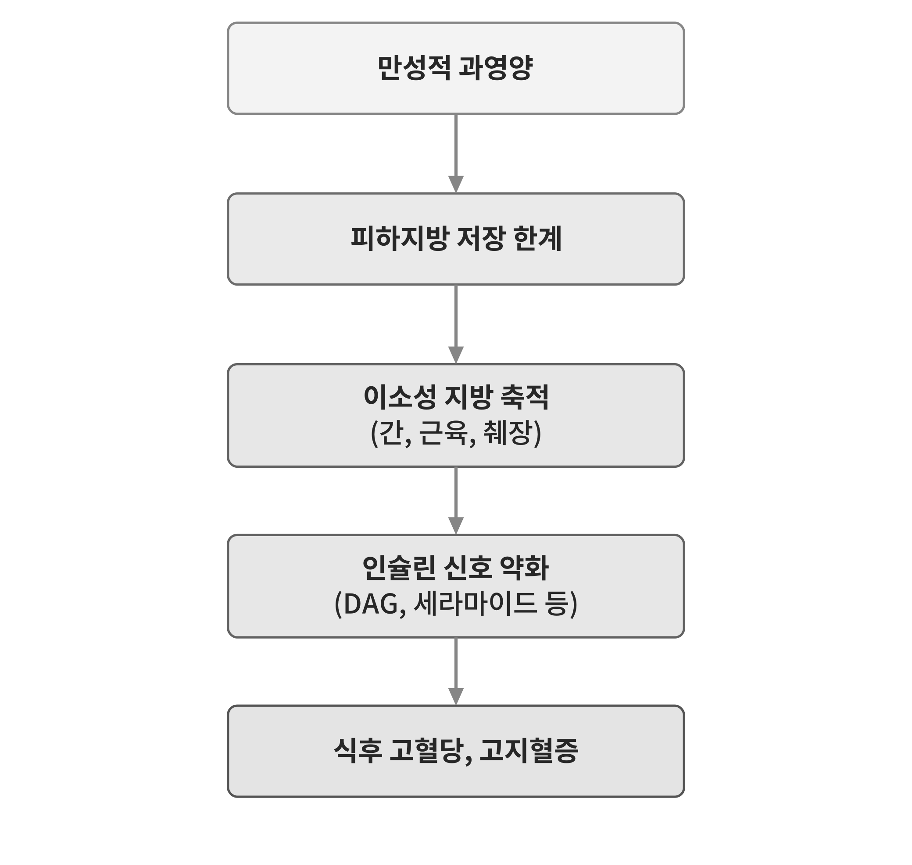
그림 21-1의 흐름은 인과 사슬로 제시되지만, 각 단계가 원인인지 결과인지에 대해서는 논쟁이 있다. 인슐린 저항성이 먼저 와서 지방 저장을 방해한다는 반대 방향의 해석도 있으므로, 이 그림은 가설의 구조를 보여 주는 것으로 읽어야 한다.
인슐린 저항성은 인슐린 신호 경로 어딘가에서 신호가 약해지는 것이다. 15장의 경로를 되짚으면 인슐린 수용체, IRS, PI3K, AKT, GLUT4 이동 순서이며, 약해지는 지점으로 다음 가설이 제시되어 있다.
표 21-1. 인슐린 저항성의 분자 기전 가설.
| 가설 | 핵심 | 약해지는 지점 | 근거와 한계 |
|---|---|---|---|
| 지질 중간대사물 | 디아실글리세롤(DAG)이 PKC를 켜 IRS를 잘못 인산화 | 수용체 하류 (IRS) | 근육·간 생검 연구, 인과는 논쟁 |
| 세라마이드 | 세라마이드가 AKT를 억제 | AKT | 동물·세포 연구 중심 |
| 염증 | 비만 지방조직의 대식세포가 TNF-α, IL-6를 분비 | 전신 신호 | 사람 임상시험 결과는 일관되지 않음 |
| 소포체 스트레스·산화 스트레스 | 과영양이 소포체와 미토콘드리아에 부담 | 여러 지점 | 13장 ROS와 연결, 인과 불명 |
| 고인슐린혈증 자체 | 높은 인슐린이 수용체를 하향 조절 | 수용체 | 자기 강화 고리 가능성 |
표 21-1에서 어느 가설도 단독으로 충분히 설명하지 못한다는 점이 읽힌다. 인슐린 저항성은 조직(간, 근육, 지방)마다 먼저 나타나는 순서와 기전이 다르다는 의견이 우세하다.
저항성의 결과는 조직마다 다르게 나타난다. 근육에서는 GLUT4 이동이 줄어 식후 포도당 흡수가 줄고 혈당이 오래 높아진다. 간에서는 인슐린이 포도당 신생을 충분히 억제하지 못해 공복 혈당이 오르면서도 새 지방 합성은 계속 켜져 있는 선택적 저항이 나타난다(포도당 생성은 저항이지만 지방 합성 경로는 여전히 인슐린에 반응). 지방조직에서는 인슐린이 지방 분해를 억제하지 못해 유리지방산이 늘고, 이것이 다시 간과 근육의 지질 축적과 저항성을 악화시킨다.
표 21-2. 인슐린 저항성의 조직별 결과.
| 조직 | 식후에 나타나는 이상 | 파급 효과 |
|---|---|---|
| 근육 | 포도당 흡수 감소 | 식후 고혈당 지속 |
| 간 | 포도당 신생 억제 실패, 지방 합성은 지속 | 공복 고혈당, 지방간, VLDL 증가 |
| 지방조직 | 지방 분해 억제 실패 | 유리지방산 증가, 이소성 지방 가속 |
| 췌장 | 인슐린 분비 보상 후 소진 가능 | 제1기 분비 소실, 고혈당 고착 |
표 21-2는 서로 다른 조직의 이상이 연쇄적으로 맞물려 악순환을 이룬다는 점을 정리한 것이다. 이 악순환이 6부(공복)에서 다시 나타나는 현상(공복 고혈당, 높은 유리지방산)의 뿌리이다.
식후 대사의 한계를 풀려는 접근은 세 갈래로 요약된다. 입력을 줄이는 접근(식욕 억제, 위 배출 지연: GLP-1 작용제)은 저장 용량 압박을 줄인다. 저장 효율을 바꾸는 접근(지방조직 확장성 개선, 이소성 지방 감소)은 지방 창고의 기능을 회복시키려 한다. 신호를 복원하는 접근(인슐린 감수성 개선제)은 인슐린 경로 자체를 되살린다. 어느 접근이 식후 대사의 한계를 가장 효과적으로 푸는지는 37장의 질환별 정리와 38장의 설계 원칙에서 다룬다.
5부(17~21장)의 내용을 한 끼의 에너지 흐름으로 정리한다. 들어온 에너지는 소화 흡수 뒤 열(식이유발열), 즉시 산화, 저장으로 나뉜다. 각 몫의 크기는 식사 구성, 인슐린 감수성, 저장 용량에 따라 달라지므로 이 표는 값이 아니라 구조를 보여 준다. 예시로 600 kcal 식사에서 식이유발열을 10퍼센트로 가정하면 열로 나가는 몫은 600 × 0.10 = 60 kcal이고, 나머지 540 kcal는 산화되거나 저장된다. 이 10퍼센트는 20장의 일반적 서술을 가정으로 쓴 것이며 개인값이 아니다.
표 21-3. 식후 에너지 수지표(구조).
| 갈래 | 내용 | 결정 요인 | 해당 장 |
|---|---|---|---|
| 열(식이유발열) | 소화·흡수·대사 비용과 교감·갈색지방의 몫 | 영양소 종류, 교감신경 | 20장 |
| 즉시 산화 | 식후 포도당·지방산·아미노산의 연료 이용 | 연료 경쟁, 대사 유연성 | 16장 |
| 글리코겐 저장 | 간·근육 글리코겐 합성 | 인슐린, 창고 용량 | 18장 |
| 지방 저장 | 새 지방 합성, 지방조직 재합성 | 인슐린, LPL, 지방조직 확장성 | 18장, 21장 |
| 단백질 합성 | 근육·장기 단백질 | 아미노산, mTORC1 | 14장, 18장 |
| 잔류(한계 초과) | 이소성 지방, 고혈당·고지혈증 | 저장 한계, 인슐린 저항 | 21장 |
표 21-3의 마지막 행이 이 부의 결론이다. 저장의 한계를 넘은 에너지는 사라지지 않고 이소성 지방과 혈중 잔류로 남아 인슐린 저항성을 키운다. 6부는 이 상태에서 시작해, 식사가 끝난 뒤 몸이 저장분을 어떻게 꺼내 쓰는지를 다룬다.
Himsworth, H. P. (1936). Diabetes mellitus: Its differentiation into insulin-sensitive and insulin-insensitive types. The Lancet, 227(5864), 127–130. https://doi.org/10.1016/S0140-6736(01)36134-2
Yalow, R. S., & Berson, S. A. (1960). Immunoassay of endogenous plasma insulin in man. Journal of Clinical Investigation, 39(7), 1157–1175. https://doi.org/10.1172/JCI104130
Petersen, M. C., & Shulman, G. I. (2018). Mechanisms of insulin action and insulin resistance. Physiological Reviews, 98(4), 2133–2223. https://doi.org/10.1152/physrev.00063.2017
Samuel, V. T., & Shulman, G. I. (2016). The pathogenesis of insulin resistance: Integrating signaling pathways and substrate flux. Journal of Clinical Investigation, 126(1), 12–22. https://doi.org/10.1172/JCI77812
Virtue, S., & Vidal-Puig, A. (2010). Adipose tissue expandability, lipotoxicity and the metabolic syndrome: An allostatic perspective. Biochimica et Biophysica Acta, 1801(3), 338–349. https://doi.org/10.1016/j.bbalip.2009.12.006